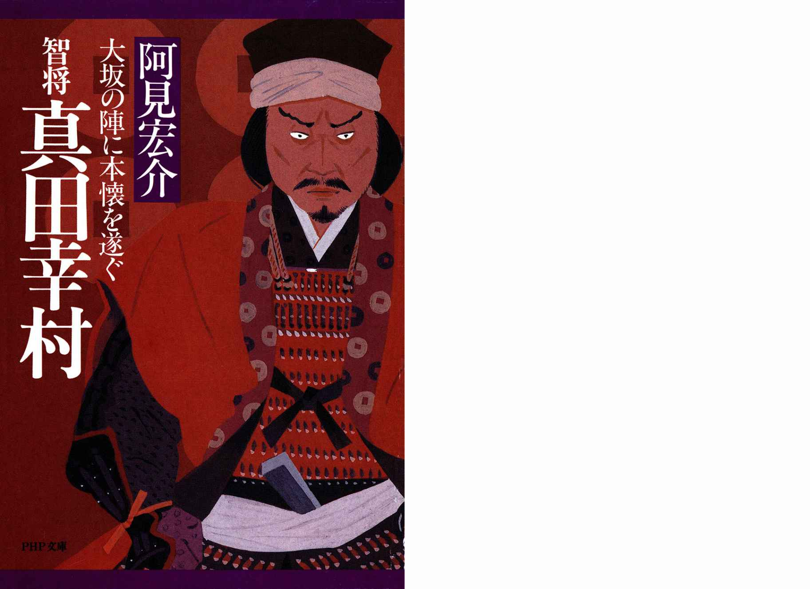
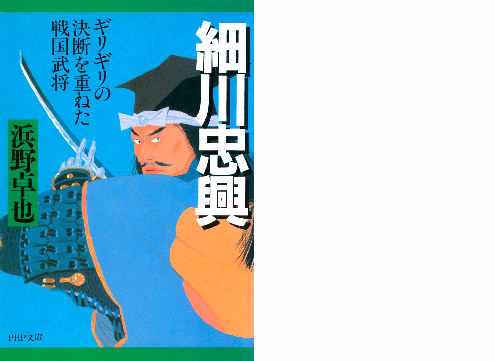
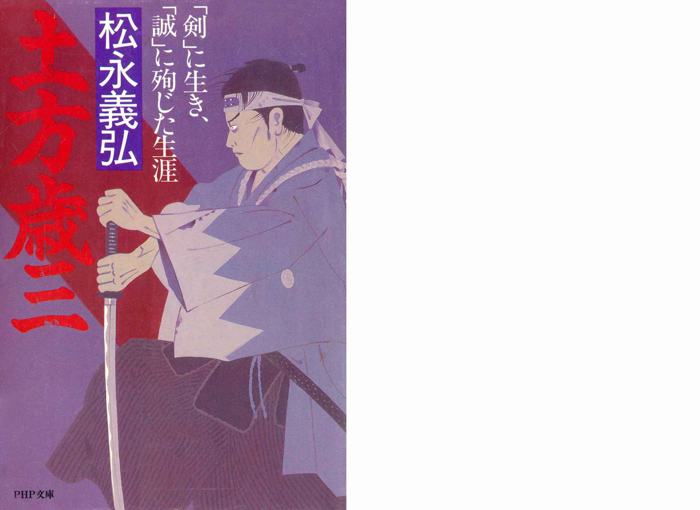
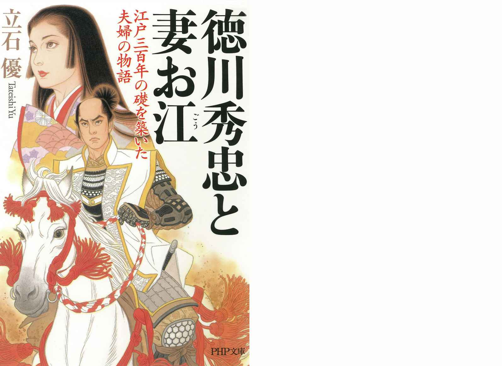
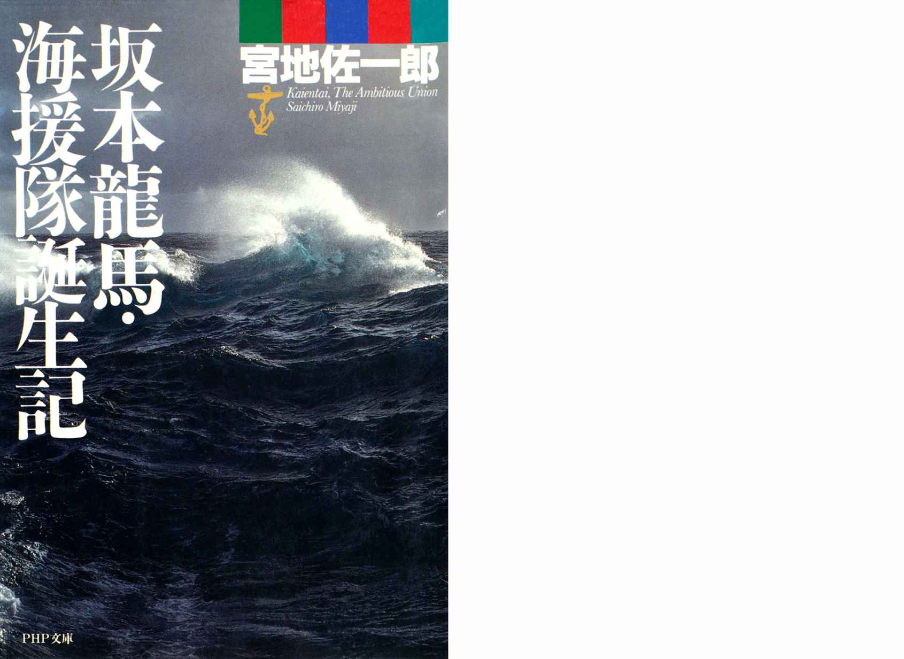

| PHP研究所歴史人物ベスト100 2014 PHP電子 | |
| PHP研究所 | |
| (2015) | |
PHP研究所歴史人物ベスト100
2014
PHP研究所 編
はじめに
2015年5月現在、PHP研究所の電子書籍の配信タイトル数が4600点を超えました。
PHP研究所の電子書籍ラインナップは、経済、経営書から文芸小説、児童書までジャンルは多岐にわたりますが、そのなかでも歴史関係の書籍が多いこともひとつの特徴です。
PHP研究所は1946年に松下幸之助によって創設され、現在に至るまで多数の書籍を刊行してまいりましたが、「過去において私たちの先人たちが、人生や社会など、人間に関するあらゆる問題について積み重ねてきた思索と体験を、有効適切に生かしていきたい」という姿勢から、先人に学ぶきっかけとしての歴史関連書籍を多く刊行しており、その多くが電子書籍として配信されています。
この電子書籍は、そんなPHP研究所の2014年4月から2015年3月までの電子書籍売上データの中から、江戸時代以前の歴史的人物をタイトルに冠した作品にフォーカスし、その売上ベスト100をご紹介するものです。
このランキングをは大変興味深く、どの時代の誰が人気を集めているのかも見えてきます。ベスト100のなかには、古代史の謎を握るあの人物、源平の覇権争いを演出した武士、戦国時代に凌ぎを削った各地の武将、江戸の繁栄を象徴する将軍、はたまた三国志の有名人まで、様々な時代の様々な人物をテーマとした作品が登場します。また近刊はもちろん、90年代の初頭に刊行された作品まで網羅され、電子書籍ならではのランキングとなっております
ぜひとも、このランキングからPHP研究所の歴史関連の電子書籍を俯瞰してみてください。そして興味を持たれた作品をご一読いただければより幸甚です。
2015年5月22日 PHP研究所 電子事業部
【本電子書籍について】
○本電子書籍に掲載したランキングは2014年4月から2015年3月までのPHP研究所の電子書籍の中から、江戸時代以前の歴史人物をタイトルに冠した電子書籍をピックアップし、全販売ストアの売上を集計したものです。
○各ページ末の「電子書籍の詳細ページはこちら 」の「こちら 」の文字をタップまたはクリックすると、書籍の商品詳細ページに遷移します。
○本電子書籍中で一部、漢字が簡略体で表示される場合があります。
2014年 PHP研究所電子書籍
第1位
利休にたずねよ
山本兼一
2010年刊
おのれの美学だけで秀吉に対峙し天下一の茶頭に昇り詰めた男・千利休。その艶やかな人生を生み出した恋とは。第140回直木賞受賞作。
女のものと思われる緑釉の香合を肌身離さず持つ男・千利休は、おのれの美学だけで時の権力者・秀吉に対峙し、天下一の茶頭に昇り詰めていく。刀の抜き身のごとき鋭さを持つ利休は、秀吉の参謀としても、その力を如何なく発揮し、秀吉の天下取りを後押し。しかしその鋭さゆえに秀吉に疎まれ、理不尽な罪状を突きつけられて切腹を命ぜられる。利休の研ぎ澄まされた感性、艶やかで気迫に満ちた人生を生み出したものとは何だったのか。また、利休の「茶の道」を異界へと導いた、若き日の恋とは...。「侘び茶」を完成させ、「茶聖」と崇められている千利休。その伝説のベールを、思いがけない手法で剥がしていく長編歴史小説。第140回直木賞受賞作。解説は作家の宮部みゆき氏。
電子書籍の詳細ページはこちら
2014年 PHP研究所電子書籍
第2位
黒田官兵衛の「先読み力」
童門冬二
2014年刊
のちに信長、秀吉、家康に重用される「天下一頭の鋭い男」は、どのような生き方を選んだのか――。
西播磨の大名・小寺氏の家老の座にあった黒田官兵衛。情報通として知られた官兵衛は、時代の風を敏感に感じ取るなかで「天下人」の存在に気づく。のちに信長、秀吉、家康に重用される「天下一頭の鋭い男」は、どのような生き方を選んだのか――。現代の経営者やビジネスマンにも役立つ「リーダー力」「マネジメント力」を、歴史上の人物の生き方・考え方から短時間で学べるシリーズです。
電子書籍の詳細ページはこちら
2014年 PHP研究所電子書籍
第3位
竹中半兵衛と黒田官兵衛
秀吉に天下を取らせた二人の軍師
嶋津義忠
2006年刊
豊臣秀吉の天下取りは二人の軍師の存在なくして語れない！
竹中半兵衛と黒田官兵衛――認め合い、信頼し合った二人を描く力作長編小説。
天正18年（1590）、豊臣秀吉は戦国乱世の時代に終止符を打ち、天下統一を成し遂げた。この偉業を支えた二人の名軍師が、竹中半兵衛重治と黒田官兵衛孝高である。わずかな手勢でやすやすと美濃・稲葉山城を盗り、そのあとで城を主に返して隠棲した無欲の天才・竹中半兵衛。秀吉が織田家臣団の中で台頭する時期、戦場における半兵衛の貢献は計り知れないほど大きかった。一方、播磨の国人に仕える一家老でありながら、天下への志を抱いた智謀と誠実の人・黒田官兵衛。本能寺の変に際して中国大返しを実現させ、官兵衛は秀吉に天下人への道を開いた。「二兵衛」と並び称された半兵衛と官兵衛は、置かれた環境は異なり、性格も正反対だった。にもかかわらず、互いの才を認め合い、相手を信頼し合って、秀吉の天下取りを補佐した。二人が抱き続けた志と友情は、今日の我々の胸を打つ「熱さ」を帯びている。不世出の軍師二人の人生を描いた力作長編小説。
電子書籍の詳細ページはこちら
2014年 PHP研究所電子書籍
第4位
蒲生氏郷の知恵
人びとの意識を変えた驚きの地域振興策
童門冬二
2013年刊
卓越したセンスで数々の難局を解決してきた蒲生氏郷。歴史上の名将の生き方から、現代の経営者やビジネスマンにも役立つ「リーダー力」「マネジメント力」を短時間で学べるシリーズです。
卓越したセンスで数々の難局を解決してきた蒲生氏郷。氏郷が「人使いの名人」と言われたのはなぜ？ 信長が認め、秀吉が警戒した独特の才覚とは？ 伊勢や会津で発揮された氏郷のリーダーシップに、マネジメントのヒントがある！ 『10分間歴史ダイジェストシリーズ』は歴史上の名将の生き方から、現代の経営者やビジネスマンにも役立つ「リーダー力」「マネジメント力」を短時間で学べるシリーズです。
電子書籍の詳細ページはこちら
2014年 PHP研究所電子書籍
第5位
石田三成のビジネス力
近江感覚を活用する経営
童門冬二
2013年刊
寺での奉公中にひょんなことから気に入られ、秀吉の家来となった石田三成。歴史上の名将の生き方から、現代の経営者やビジネスマンにも役立つ「リーダー力」「マネジメント力」を短時間で学べるシリーズです。
寺での奉公中にひょんなことから気に入られ、秀吉の家来となった石田三成。秀吉が三成に惚れ込んだのはなぜ？ 三成が持っていたブレーンとしての才能とは？ 三成が発揮した「近江人的感覚」とはどのようなもの？ 『10分間歴史ダイジェストシリーズ』は歴史上の名将の生き方から、現代の経営者やビジネスマンにも役立つ「リーダー力」「マネジメント力」を短時間で学べるシリーズです。
電子書籍の詳細ページはこちら
2014年 PHP研究所電子書籍
第6位
直江兼続の策
倒産寸前の上杉家を救ったマネジメント
童門冬二
2013年刊
関ヶ原の戦いで大敗を喫し、御家存続の危機に瀕した上杉家。そこで直江兼続が示した責任のとり方とは？
歴史上の名将の生き方から、現代の経営者やビジネスマンにも役立つ「リーダー力」「マネジメント力」を短時間で学べるシリーズです。
関ヶ原の戦いで大敗を喫し、御家存続の危機に瀕した上杉家。そこで名参謀・直江兼続が示した責任のとり方とは――？ 時代を読む眼力に優れ、人を惹きつける魅力に満ちた直江兼続。義と愛を貫いた男の生き方にマネジメントを学ぶ！ 『10分間歴史ダイジェストシリーズ』は歴史上の名将の生き方から、現代の経営者やビジネスマンにも役立つ「リーダー力」「マネジメント力」を短時間で学べるシリーズです。
電子書籍の詳細ページはこちら
2014年 PHP研究所電子書籍
第7位
毛利元就の経営術
いかにして「毛利ゾーン」はつくられたか
童門冬二
2013年刊
中国地方を治めた名将・毛利元就。統治範囲が広かったため、地域内で土地をめぐる小豪族同士の争いも絶えなかった。頭を悩ませていた元就が考えだした自治経営システムとは？
中国地方を治めた名将・毛利元就。統治範囲が広かったため、地域内で土地をめぐる小豪族同士の争いも絶えなかった。「何とかできないだろうか」と頭を悩ませていた元就は、偶々目にした一揆の連判状をヒントに自治経営システム「カラカサ連合」を考え出す――。現代の経営者やビジネスマンにも役立つ「リーダー力」「マネジメント力」を、歴史上の人物の生き方・考え方から短時間で学べるシリーズです。
電子書籍の詳細ページはこちら
2014年 PHP研究所電子書籍
第8位
あるじは信長
岩井三四二
2014年刊
織田信長に振り回されながらも、懸命に生き抜こうとする有名無名の家臣たちを、彼らの目線で描く連作短編。「あるじシリーズ」第1弾！
上様、そんな理不尽な――織田信長は、出自にかかわらず、力ある者を抜擢したことで、天下人へと駆け上がった。しかし、その裏では、成果至上主義にとまどい、翻弄された家臣たちが......。兄か、あるじ信長かを選ぶ破目に陥って悩む佐々内蔵助、合戦ではなく筆で身をたてようと決意する楠木長諳、信長の成功を真似て無謀な策に打って出る別喜右近など、あるじに振り回されつつも懸命に生きる男たちを、彼らの目線で描く。
電子書籍の詳細ページはこちら
2014年 PHP研究所電子書籍
第9位
織田信長101の謎
知られざる私生活から、「本能寺の変」の真実まで
川口素生
2005年刊
戦国の風雲児・織田信長。その波乱万丈の人生から謎に包まれている面も少なくない。知られざる信長像を101の視点から炙り出す一冊。
中世最大の天才と言われ、乱世を切り開いた英雄としてその名を現代に遺す織田信長。多くの個性豊かな武将を輩出した戦国時代にあってもひときわ異彩を放ち、鉄砲三段撃ちに代表される斬新な戦略・戦術と、楽市・楽座など画期的な諸政策を武器に、中世日本を新しい時代へと導いた。それゆえに多くの人にその生涯を知られている信長だが、一方で生い立ちや家族との関係、あるいは私生活となると意外と知られていないことも多い。そこで本書は、誰もが知っている信長の功績から、意外と知られていない私生活の実態まで、ありとあらゆる謎を最新資料に基づいて徹底検証。誰もが疑問に思う「なぜ父の葬儀の際に香を投げつけたのか」「なぜ随分昔の謀叛を理由に重臣をリストラしたのか」といったことから、「信長は大変な相撲好きだった」「お市の方とは実は兄妹ではなかった!?」といった私生活の面まで、知られざる信長像に迫った一冊。
電子書籍の詳細ページはこちら
2014年 PHP研究所電子書籍
第10位
あるじは秀吉
岩井三四二
2014年刊
出世しすぎる主を持つと、ついていくだけで精いっぱい――家臣達の目を通して"人たらし"秀吉の真実の姿を浮き彫りにした連作短編集。
秀吉は本当に"人たらし"だったのか!?豊臣秀吉が一介の草履取りから、天下人へと駆け上がることができたのは、その人間的な魅力が大きいとされる。しかし、出世しすぎるあるじの下、右往左往した家臣たちがいた......。加藤虎之助（清正）、蜂須賀小六、小西行長といった著名人から、坪内喜太郎、御子田半左衛門など、あまり知られていない侍まで。家臣の視点で描くことで、これまでにない秀吉像が浮かび上がる。『あるじは信長』につづく「あるじシリーズ」第2弾。
電子書籍の詳細ページはこちら
2014年 PHP研究所電子書籍
第11位
継体天皇の謎
古代史最大の秘密を握る大王の正体
関裕二
2004年刊
古代史最大の謎といってもよい、不可解な人物・継体天皇。天皇になった経緯からその死まで、気鋭の歴史作家が大胆な発想で真実に迫る。
継体天皇――。この人物ほど、古代史ファンの関心をそそるテーマはあるまい。天皇との血縁がうすいうえに、都から遠く離れた北陸にいた田舎貴族が、なぜ皇位を継承できたのか。皇位継承に相応しい人物は、ほかにもっといたであろうに――。しかも、継体天皇は応神天皇の五世の孫にあたるという。この創作されたような立場が意味するものとは何か。謎に包まれた天皇、ミステリアスな天皇。それが継体天皇のイメージだ。本書は、『大化改新の謎』『壬申の乱の謎』『神武東征の謎』等、「謎シリーズ」で人気を博す新進気鋭の歴史作家である著者が、多くの資料を跳梁し、そこから浮かび上がってくる謎に、大胆な想像力をもって迫った、古代史ファン垂涎の一冊である。継体天皇とはどのような人物だったのか。前王朝を乗っ取った新王朝の始祖なのか。その面白さは、まるでミステリーの謎解きと同じだ。秋の夜長を過ごすパートナーとしてうってつけの力作である。
電子書籍の詳細ページはこちら
2014年 PHP研究所電子書籍
第12位
毛利元就
鬼神をも欺く智謀をもった中国の覇者
童門冬二
2009年刊
安芸の小領主であった毛利家を機略・調略でもって、見事中国地方の覇者にまで押し上げた元就。その波瀾に満ちた生涯を描く歴史巨編。
地侍が跋扈する中国地方を、他を圧倒する智謀と戦略で統一した毛利元就。しかし、覇者にはつねに暗い孤独の影がつきまとっていた。幼いころに両親と死別。唯一の肉親である兄とも遠く離れ、残された居城は家臣にのっとられるという過酷な運命に見舞われる。「わたしはこの世から見捨てられた人間です」という少年元就を支え続けたのは、血のつながらない聡明な母だった......。当主となってからの元就は毛利家を中心とした地侍の連合をめざし、様々な手段を用いた。元就が重んじたのは「武略」「調略」「計略」。慎重に相手を探り、罠を張り巡らせ、行動を起こすときは迅速に。ときには家臣をも血の粛清にかけ......。そのたびに元就のこころは暗く、冷たいしずくで満ちていく――。三人の息子に「三本の矢」の教訓を遺した元就の胸中には、家族に対し、いったいどんな思いがあったのか。中国地方の覇者・毛利元就のこころの葛藤と人間像を鋭く描いた歴史巨篇！
電子書籍の詳細ページはこちら
2014年 PHP研究所電子書籍
第13位
聖徳太子の秘密
「聖者伝説」に隠された実像に迫る
関裕二
2005年刊
摂政として推古天皇を助け、十七条憲法の制定、遣隋使の派遣など、国家としての体裁と大陸文化の移入に努めた聖徳太子の素顔に迫る。
摂政として推古天皇を補佐し、十七条憲法を制定し、遣隋使を派遣するなど、国家としての態勢を整え、大陸文化の移入に努めた聖徳太子......。われわれが描く聖徳太子のイメージは、仏教を重んじた清廉な政治家というのが一般的だ。それは、『日本書紀』のなかで、聖徳太子が「聖者」として扱われていることと無関係ではないだろう。しかし、「聖者」として礼賛される一方で、日本の各所に「鬼」として祀られる聖徳太子が存在する。著者の聖徳太子に対する関心は、「聖者伝説」と「鬼伝説」という、一人の人物に真っ向から異なった二つの評価が存在しているところから出発している。はたして聖徳太子は「聖者」なのか「鬼」なのか！ これまでも、大化改新、壬申の乱、神武天皇、継体天皇、物部氏など古代史を彩る事件や人物の謎に、定説にとらわれることなく、大胆な発想で鋭く迫った著者の筆の切れ味は、本書でも多いに発揮されている。古代史ファン垂涎の一冊。
電子書籍の詳細ページはこちら
2014年 PHP研究所電子書籍
第14位
二宮尊徳の経営学
財政再建、組織改革を断行できるリーダーの条件
童門冬二
2013年刊
苦学の人という印象の金次郎。だが実像は領地経営を立て直し、農村を復興させるなど財政再建の達人であった。日本人が学ぶべき人物！
多くの人は小学校でみた、薪を背負って読書する金次郎の銅像のイメージが強いだろう。しかしその素顔は、倒産寸前の会社を立て直す、いまでいう再建コンサルタントのような存在だった。特に、尊徳は自身の切実な経験を基に「積小為大」や「一円融和」さらに「報徳仕法」などを生み出している。これらは、すべて少年時代からの"痛い経験"が動機である。いわば「身近なところで起こった経験」を土台にし、「いまいる場所でできることから実行する」という理想的な姿だ。この発想は、現代の我われも真似できる智恵となるだろう。一農民でありながら各農村や組織に赴き、私財を投じて財政再建や組織改革を成功させた二宮尊徳。本書では、その経営手腕やモチベーションを高める指導力など、組織再生の極意を明かす。名経営者も絶賛する奇跡の再建術とは？
電子書籍の詳細ページはこちら
2014年 PHP研究所電子書籍
第15位
信長・秀吉・家康の研究
乱世を制した人づくり、組織づくり
童門冬二
2006年刊
乱世に覇を唱えた信長・秀吉・家康は、人材を登用し、最大限に能力を発揮させる天才であった。3人の人心掌握・組織運営の要諦に学ぶ。
優れた大名が数多く存在した戦国時代において、なぜ信長・秀吉・家康だけが天下人たりえたのか？ 共通するのは、人材を見抜き、動かし、勝てる組織をつくる卓越した手腕である。本書は、有能な人物を数多く登用し、各々の力を最大限に引き出して天下統一事業を進めた3人の英雄の事跡・逸話から、現代につながる"人づくり、組織づくり"のエッセンスを読み解いた好著である。信長・秀吉・家康が、どのように人の能力を見抜いたかを振り出しに、部下のモチベーションをどう高めたか、自ら目標達成へ動く組織づくりの手法、上司と部下の人間関係のツボ、大改革を断行するリーダーの条件まで、現代的視座から多角的な比較・分析がなされている。信長・秀吉・家康と部下の武将たちの具体的な事例をもとに、平易な語り口で解説されており、歴史読み物としても、ビジネス上のヒントを学ぶ書としても楽しく読める。『人を見抜く 人を動かす』を改題の上、再編集。
電子書籍の詳細ページはこちら
2014年 PHP研究所電子書籍
第16位
レオン氏郷
安部龍太郎
2012年刊
織田信長にその才を見込まれて娘婿となり、豊臣秀吉には文武に秀でた器量を畏れられた蒲生氏郷の、波乱に満ちた生涯を描いた長編小説。
先の見えすぎた男が背負った重き十字架――織田信長が惚れこみ、豊臣秀吉がその器量を畏れた武将・蒲生氏郷の生涯を描く長篇小説。信長に見出されて娘婿となり、その薫陶を受けて武将として成長する蒲生氏郷。世界とわたり合える国をつくるために天下統一を急ぐ信長の志を理解し、その実現をめざして邁進していた氏郷だったが、長島一向一揆での惨劇を目にして、心が大きく揺らぎ始めていた。信長亡き後、その遺志を受け継ぐと思われた秀吉に従い、数々の合戦で功を立てた氏郷は、会津百万石の太守になる。しかし、秀吉が私利私欲にとらわれていた事実を知り、志を遂げるために独自の道を歩むことを決断したのであった......。茶人やキリシタン大名としても知られている蒲生氏郷には、文武に秀でた器量に危機感を覚えた秀吉が毒殺したとの説もある。その謎を解き明かすと共に、著者独自の解釈とグローバルな視点で、蒲生氏郷の人生を骨太の筆致で描いた力作。
電子書籍の詳細ページはこちら
2014年 PHP研究所電子書籍
第17位
〔実説〕 諸葛孔明
ある天才軍師の生涯
守屋洋
1993年刊
『三国志』の中で、天才軍師として華々しく登場する諸葛孔明。ライバル仲達とは本当に戦ったのか？
などフィクションを取り除き、真実の生涯に迫る著者会心の力作！
「三国志」のヒーロー諸葛孔明。きわだった個人的武力を持たない彼が、鬼をもあざむく知略を武器に寡兵をもって大軍を打ち破る。このドラマにこそ庶民は喝采を送るのだが......。
本書で語られるように本物の孔明は小説ほど成功していなかった。
けれども、真実の孔明の生涯は一人の清廉な男の人生として、新たな感動を放つ。孤高の天才軍師の足跡をたどる力作評伝。
電子書籍の詳細ページはこちら
2014年 PHP研究所電子書籍
第18位
荒木村重
命惜しゅうて候
黒部亨
1996年刊
織田信長に仕えたものの、あらぬ謀叛の嫌疑をかけられ、やむなく反旗を翻した荒木村重。戦国武将の心の葛藤を描いた傑作歴史小説。
「わしは心底、酷薄な人間なのかもしれませぬ。しかし、生きてあればこそ人。何といわれようとも、まだ死ぬわけにはいかぬ」。村重は強く自分にいい聞かせた。
旧主池田勝正の追放、第二の主君織田信長への反逆、そして逃亡......利休七哲の一人に挙げられる一級の文化人でありながら、卑怯な行動をとった村重の真意とは何か？
戦国の非情に翻弄されつつも、己の人間らしさを全うした武将の生涯。『荒木村重 惜命記』を文庫化。
電子書籍の詳細ページはこちら
2014年 PHP研究所電子書籍
第19位
豊臣秀吉99の謎
楠戸義昭
1996年刊
才知と強運の男・豊臣秀吉のすべてを一冊に！
その「生いたちの謎」から「太閤、落日の謎」まで、99項目のＱ＆Ａで明らかにする。
「秀吉の弟、秀長が果たした役割とは」「千利休はなぜ自決したのか」「秀勝という実子は本当にいたのか」「家紋・太閤桐は何に由来するのか」「墨俣一夜城のミステリーとは」...。才知と強運で一気に天下人にまで上りつめた男、豊臣秀吉。その潤色された出生から伏見城に露と消えるまで、99の謎を解きながら、この天才的革命児の実像を明らかにする！
電子書籍の詳細ページはこちら
2014年 PHP研究所電子書籍
第20位
北条氏康
信玄・謙信と覇を競った関東の雄
菊池道人
2002年刊
祖父・北条早雲の遺志を継ぎ、関東八州を制圧した氏康。民政にも力を尽くし、後北条氏五代の最盛期を築いた名将の堂々たる生き方を描く。
北条早雲にはじまる後北条氏五代。本書は、その最盛期を築いた第三代・氏康の生涯を描く長編小説である。物語は氏康の幼少期からはじまる。ある日、小田原城近くの沼地で大筒の試射が行なわれた。幼き氏康はその爆裂音に怯え震えが止まらない。祖父以来、武勇で名を馳せる北条家の後継ぎとして、屈辱とも言える弱虫の烙印を押されるのである。だが、氏康に仕える家臣たちは、この弱虫若君を見放さなかった。厳しくも温かい養育で、一国を治める武将へと導いていくのである。やがて16歳になった氏康は、時の関東管領・上杉朝興軍と武蔵小沢原で対峙。陽動作戦で上杉軍を翻弄し、見事初陣をかざるのであった。以後、祖父早雲の遺志・関東制覇を一心に念じ、今川義元、武田信玄等と互角に渡り合い、ながら、ついに「河越夜戦」で上杉軍を降し、事実上の関東の覇者となるのである。卓抜なる軍略と民政で関八州を制した名将の、堂々たる生きざまを描く力作。
電子書籍の詳細ページはこちら
2014年 PHP研究所電子書籍
第21位
［新装版］勝海舟の人生訓
童門冬二
2008年刊
幕末の主要な人物たちに大きな影響を与え、自らも軍事上の大役を務めた勝海舟。彼の言葉からその行動哲学をさぐり、処世訓を学ぶ。
勝海舟はもとは身分の低い御家人だったが着々と出世し、徳川幕府が倒れる寸前には幕府の終戦最高責任者として江戸無血開城を果たした。その後は明治新政府に参加し海軍大臣や枢密顧問官にもなっている。つまり勝は「二君に仕えた幕臣」の典型である。そんな勝の生きる姿勢を、「忠臣二君に仕えず」と苦々しく思っていた福沢諭吉をはじめとする世論。しかしながら勝は「白か黒か」の二者択一的なものの考え方や行動をとらなかった。「自分で、自分を窮地に追い込まない」、つまり自分を大切にするという、積極的で柔軟な自然体で人生に対していったのである。それは単にエゴイズムに走るということではなく、他人の意見を尊重し、他人の人格を尊重したからこそ、自分の人格を大切にした、ということなのである。本書は、勝海舟のたどった人生と、西郷隆盛、坂本龍馬、島津斉彬など彼がかかわった多くの人達とのエピソードをまじえながら語られる、含蓄ある箴言集。
電子書籍の詳細ページはこちら
2014年 PHP研究所電子書籍
第22位
小説 千利休
秀吉との命を賭けた闘い
童門冬二
1997年刊
天下人・秀吉の側近であり、茶人としても大成した男が、追求し続け、主君にも決して譲らなかった市民（まちびと）精神とは何なのか？
「この"にじり口"から茶室に入れば、あなたは一人の人間になります」------この利休の言葉に、秀吉は激しく反発する。「俺は、茶室に入っても、おまえとは同等ではない」------と。一触即発の関係の中で日を重ね、心の溝を深めてゆく二人。そしてついに決定的な出来事が起こった------。 本書で、「なぜ利休は、それほどまでに天下人･秀吉と対立したのか」を、利休の内面を照射しながら、徹底的に探ってゆく。そして、その心のありかを、「利休のその強靭な精神は、あくまでも、"自分をまちびと（市民）である"と考えた自己保持にある」という結論を導き出してゆく。 さまざまな形で、多くの作家が書き尽くした感のある「利休切腹」の真相を、利休自身の「まちびと」としての生き方に求め、天下人を気取る成り上がり物への反抗心として描き上げた著者の視線は、痛快であると同時に新しい。男の人生には美学が必要だと語りかけてくれる好著である。
電子書籍の詳細ページはこちら
2014年 PHP研究所電子書籍
第23位
藤堂高虎
秀吉と家康が惚れ込んだ男
羽生道英
2005年刊
秀吉が惚れ込んで直臣とし、家康が絶対の信頼を寄せて腹心とした男。「ごますり大名」といわれてきた彼の、隠れた魅力に迫る長編小説。
二人の天下人が惚れ込んだ戦国武将、藤堂高虎――豊臣秀吉は何がなんでも彼を自分の直臣にしようと画策し、徳川家康は譜代の家臣ではない彼に誰よりも厚い信頼を寄せた。近江の一豪族の次男として生まれた高虎が、浅井長政をはじめ、羽柴秀長、秀吉、家康とつぎつぎに主を変えながら、明日をも知れぬ戦国乱世をしたたかに生き抜き、伊賀・伊勢32万石の太守にまで上りつめることができたのは何故か。槍をとっての戦さ働きはもちろん、将としての駆け引き、水軍の指揮、築城技術、戦時だけでなく平時における情報収集など、あらゆる能力を身につけていった高虎は、持ち前の向上心と不断の努力によって、日々己の価値を高め、人生を切り開いていった......。主を何度も変えてきたのにもかかわらず、最後に仕えた家康からの絶大な信頼を勝ち取ったことから、「ごますり大名」「二股膏薬」と揶揄された藤堂高虎の汚名をすすぎ、その真実の姿を描ききった長編力作。
電子書籍の詳細ページはこちら
2014年 PHP研究所電子書籍
第24位
司馬仲達
松本一男
1993年刊
宿敵・諸葛孔明を倒し、王朝"晉"の礎を築き上げた屈指の軍略家・司馬仲達。目的完遂のためには手段を選ばなかったこの男の人間像から、混迷の時代を制する者の条件を問う。
宿敵・諸葛孔明を倒し、王朝"晉"の礎を築き上げた屈指の軍略家・司馬仲達。人に恨まれてでも勝利をつかみ取る非情なる寝業師ぶりから、あまり人気もなく悪役視されてきたが、最終的に人生の覇者となったその生き様には、現代に生きる我々にも通じる重要な行動哲学を見ることができる。目的完遂のためには手段を選ばなかったこの男の人間像から、混迷の時代を制する者の条件を問う。
電子書籍の詳細ページはこちら
2014年 PHP研究所電子書籍
第25位
真田幸村と後藤又兵衛
高橋直樹
2014年刊
大坂の陣から400年――「最後の戦国武将」と称すべき真田幸村と後藤又兵衛の熱き生き様を、新解釈で勇壮に描いた本格歴史小説。
大坂の陣から四〇〇年――誰も見たことのない幸村と又兵衛が、ここにいる！五十男にして側近から若殿と呼ばれる真田幸村。京の都で遊女屋の用心棒ぐらしをする後藤又兵衛。慶長十九年（一六一四）、不遇をかこつ軍略家二人が、大坂城に入った。しかし決戦を前に、大坂城内は謎ばかり。又兵衛が警戒する真田家の不審な家臣・味岡、幸村の脳裏に蘇る長篠合戦の記憶、突如姿を現わした亡父・真田昌幸と瓜二つの老人、そして決戦前夜の、幸村と又兵衛二人の秘策......。戦国最後の戦いの行方はいかに？謎が謎を呼ぶ巧みな仕掛けでかつてない大坂の陣を展開させつつ、時代の巨大な奔流に抗った男たちの熱き魂を描いた、著者渾身の歴史長編。
電子書籍の詳細ページはこちら
2014年 PHP研究所電子書籍
第26位
慈悲深き鬼 島津義弘
戦国歴史研究会
2008年刊
朝鮮出兵や関ヶ原などにおける猛将ぶりで有名な島津義弘だが、実は慈悲深い一面も持っていた。巻頭に挿入された感動の漫画にも注目！
二十歳の初陣以降、倒した敵は数知れず。九州木崎原の戦いでは十倍の敵を打ち破り、朝鮮にわたっては「鬼シマヅ」と呼ばれ明軍を震え上がらせた、戦国最強の誉れも高い英傑が、島津義弘である。しかし、彼の名を最も高めているのは、関ヶ原での豪快な「負けっぷり」であろう。わずかな手勢で参戦した義弘は、敗色濃厚の状況で、敵の正面を突っ切って帰国を果たしたのだ。これぞ世にいう「関ヶ原の退（の）き口」である。さらに、彼の魅力は、家族や家臣、そして敵までもいたわる人間性にもあらわれており、その度量の広さにより、誰もが義弘のためには命も惜しまなかったという。その最たるものが先の「退き口」であり、事実、彼ひとりの命を守るために九百名近くの薩摩隼人が関ヶ原の地に散った。冒頭の漫画では、そんな義弘の人生に、剛の顔と柔の顔の両面から迫っている。本書に掲載されたさまざまな逸話に触れ、島津義弘という武将の魅力を堪能してほしい。
電子書籍の詳細ページはこちら
2014年 PHP研究所電子書籍
第27位
上杉鷹山と細井平洲
人心をつかむリーダーの条件
童門冬二
1999年刊
崩壊寸前の米沢藩を立て直した藩主・上杉鷹山。彼の心の支えとなったのが師・細井平洲の教えだった。師弟に学ぶ、心をつかむ人間学。
見事に復興なった米沢の地で平洲と鷹山は再会をはたした。二人とも無言で頭を下げ、目には涙があふれている。もはや師弟の間に言葉はいらなかった。崩壊寸前の米沢藩をたてなおした藩主・上杉鷹山。その苦しい藩政改革を陰で支えたのは師・細井平洲の教えだった。かの吉田松陰や西郷隆盛を感動させたという細井平洲の思想とは？師弟の温かいふれあいを通してその真髄にせまる。
電子書籍の詳細ページはこちら
2014年 PHP研究所電子書籍
第28位
尼将軍 北条政子
日本史初の女性リーダー
童門冬二
2008年刊
日本史上、初の女性リーダーとして政治の頂点に君臨した北条政子。尼将軍・政子の激動の人生を、現代的視点から読み解いた歴史読み物。
鎌倉幕府を設立した源頼朝の正室・北条政子は、「尼将軍」と称され、日本の歴史上で初めて、権力の中枢にあって自ら組織を統率した女性である。男性優位の武家社会にありながら、政子が「女性トップ」として活躍できた理由とは――。平治の乱（1159年）で敗れ、伊豆で流人生活を送っていた頼朝との出会いを機に、陰に陽に幕政に関わっていく政子。富士川の戦い（1180年）に勝利した頼朝が関東支配を掌中に収め、政子は「御台」となった。頼朝の急死後は「尼御台」と呼ばれ、執権となった父時政や弟時房らと共謀し、北条一族による幕府支配を磐石なものとしていく。そして1219年、京都から下向した幼児・三寅（後の四代将軍・藤原頼経）を後見し、晴れて「尼将軍」として鎌倉幕府の頂点に君臨する。源平の騒乱、承久の乱を経て、激動の幕府草創期に権力を独占していく政子。その生涯を現代的な視座から追いかけた歴史読み物。
電子書籍の詳細ページはこちら
2014年 PHP研究所電子書籍
第29位
前田利家と妻まつ
「加賀百万石」を築いた二人三脚
中島道子
2001年刊
尾張の小土豪から加賀百万石の大大名となった前田利家とその妻まつ。激動の乱世を二人三脚で歩んだ夫婦の物語を情感を込めて描く力作。
戦国時代の夫婦の物語といえば、豊臣秀吉とねねの話が有名だが、秀吉夫妻と終生の親交を結んだ前田利家と妻まつの歩みも、「ミニ太閤記」とでもいうべき輝かしい出世譚である。若気の至りで主君・織田信長の勘気をこうむり、足軽長屋に暮らしはじめた利家とまつ。まさにゼロからの出発だったが、実直・律儀に忠義を尽くす利家は、やがて帰参を許され、信長の計らいで前田の当主となる。その後、戦場往来の日々に生きる利家を、妻まつはしっかりと支え、二男九女を育て上げていく。信長の横死、秀吉の台頭と天下統一という激変のなか、利家は「加賀百万石」の大名として豊臣政権の屋台骨を支えるようになる。だが秀吉が没し、利家も後を追うように病没すると、加賀前田家の存続をかけたまつの闘いが始まるのだった。2002年のNHK大河ドラマは「利家とまつ」に決まった。女流作家ならではの繊細な筆づかいで、テレビに先駆けて戦国の夫婦の物語を描く力作。
電子書籍の詳細ページはこちら
2014年 PHP研究所電子書籍
第30位
無傷の大槍 本多忠勝
戦国歴史研究会
2008年刊
名槍蜻蛉切の使い手であり、戦では傷知らずだった猛将本多忠勝。家康の名参謀として活躍したその生涯をコミックとともに解説していく。
トレードマークは蜻蛉切（とんぼきり）。穂先に蜻蛉（とんぼ）がとまったとたん真っ二つに切れてしまったという長槍。この槍を手に、鹿角の兜と漆黒の鎧をつけ、五十数回の戦に参加するも一度も負傷しなかったと伝えられる猛将・本多忠勝。徳川家康の名参謀として忠義を尽くし徳川四天王のひとりとしてかぞえられ活躍したその生涯は武士の何たるかを後の世にまで知らしめ続けている。「家康に過ぎたるものがふたつあり 唐の頭に本多平八（忠勝の通称）」と敵将・小杉左近にまで称えられた猛将の生涯を本書では彼の主君・徳川家康との関係を中心にまとめている。巻頭の漫画は猛将の若き日の荒武者ぶりを描いている。戦国末期まばゆいばかりに輝きを放ち天寿をまっとうした無傷の大槍・本多忠勝の生涯を堪能できる一冊である。
電子書籍の詳細ページはこちら
2014年 PHP研究所電子書籍
第31位
鬼の帝 聖武天皇の謎
関裕二
2006年刊
即位後の東国行幸にはじまり、各地を転々とした聖武天皇。「傀儡の天皇」といわれた男が、胸の内に秘めた野望を著者独自の視点で追う。
聖武天皇といえば、藤原不比等の孫であり、藤原氏に操られた「傀儡天皇」のイメージが強い。しかし、本書の著者の視点は異なる。聖武天皇は、歴史の敗者や闇の世界の人々（鬼）を取り込むことで、権力と対等に向かい合おうとした「鬼の帝」ではないかと推測する。また、日本の歴史の基層を築いたのは、藤原氏ではなく、聖武天皇その人にほかならないともいうのである。その一つの例が、天平12年10月26日、わずか400の兵をともに、忽然と平城京から姿を消し、伊賀、伊勢、美濃、不破、近江をめぐり、恭仁京、紫香楽京、難波京とわたり、平城京に遷都したのは天平17年5月。この足かけ5年にわたる「迷走」である。乱に対する恐怖からの逃走と捉える説もあるが、ある時から藤原氏による聖武天皇のコントロールが効かなくなっていることを考えると、この「迷走」の真意さえ謎なのである。気鋭の作家が聖武天皇の正体に迫る、古代史ファン垂涎の一冊。
電子書籍の詳細ページはこちら
2014年 PHP研究所電子書籍
第32位
家康と正信
戦国最強の主君と補佐役
童門冬二

2003年刊
徳川家康を天下人にし、二代将軍秀忠の執政としても手腕を発揮した天才参謀・本多正信。「水魚の交わり」といわれた最強コンビの物語。
徳川家康の陰のブレーンとして、その知謀を天下取りのために如何なく発揮した本多正信。79歳で没するまで、約40年という歳月を家康の頭脳の一部として送った彼は、まさしく真の補佐役だったといえる。三河一向一揆で主君に反旗を翻した男が、流浪の日々を経て帰参したのは、40代になってからであった。自らを不忠の臣とする思いを払拭できない彼は、その後は家康を主人としてではなく、師として仰ぐことを誓い邁進する。甲州計略、江戸の町づくりと家臣の知行割りなどに手腕をふるい、君臣の二人三脚は「水魚の交わり」といわれるまでにいたる。そして、豊臣氏から天下を奪い、徳川幕藩体制を盤石なものに築き上げていく。本書は、一度は背いた男を最高のパートナーにした主君と、献身的な忠誠で才能を遺憾なく発揮し続けた補佐役の生涯を、歴史に取材しつつ"組織と人間"の問題を描き続けてきた著者ならではの筆致で、みずみずしく描いた歴史小説である。
電子書籍の詳細ページはこちら
2014年 PHP研究所電子書籍
第33位
十文字槍の天才軍師 真田幸村
戦国歴史研究会
2008年刊
戦国時代豊臣方きっての天才軍師の真田幸村。その智勇に富んだ活躍と不遇にも最後まで折れなかったその強い心をコミックとともに解説。
織田信長、豊臣秀吉、徳川家康に次ぐ知名度と人気を誇る武将・真田幸村。天下を獲ったわけでもなく輝かしい戦歴を誇るわけでない。彼の名が高まったのは最期の戦いである大坂の陣であり、それは、戦国の世の終焉を告げる負け戦であった。関ガ原の合戦後、豊臣家を滅ぼさんとする徳川家康に真っ向から戦いを挑み圧倒的な劣勢の戦況を覆しかけた智略、奇襲、勇猛は後世まで語り草となり現代も人々を魅了してやまない。本書では幸村の生涯を大坂の陣と真田一族の興亡とともにたどる。また、真田家の旗印六文銭に秘められた謎や真田忍者の正体など、真田幸村ファンをうならせるであろう雑学知識も豊富に掲載。冒頭の漫画でイメージをいだきながら戦国末期まばゆいばかりに輝きを放った智勇兼備・十文字槍の天才軍師・真田幸村を堪能できる一冊である。
電子書籍の詳細ページはこちら
2014年 PHP研究所電子書籍
第34位
吉田松陰と松下村塾の志士100話
山村竜也
2014年刊
松陰とその大和魂を受け継いだ者たちは、いかにして戦い、散っていったのか。知られざる素顔、事績、エピソードを交えて追っていく。
激動の幕末、身命を賭して日本を変えようとした吉田松陰と、その大和魂を受け継いだ松下村塾の志士たち...。彼らは何を思い、いかにして戦い、そして散っていったのか。文政13年（1830）の吉田松陰の誕生から明治9年（1876）の松下村塾の志士・前原一誠らによって起こされた萩の乱まで、松陰、高杉、久坂、妹・文らの知られざる人生の軌跡を、エピソードをふんだんに取り入れた100話を通して辿る。松陰の少年時代、諸国遊学、海外渡航の失敗、高杉晋作・久坂玄瑞・吉田稔麿・入江九一らの入塾、文の結婚、松下村塾での出来事、松陰の死、イギリス公使館焼き討ち、禁門の変、高杉の功山寺挙兵、戊辰戦争など、吉田松陰と松下村塾の志士たちの世界がわかる一冊。
電子書籍の詳細ページはこちら
2014年 PHP研究所電子書籍
第35位
天璋院と徳川将軍家101の謎
川口素生
2007年刊
徳川13代将軍・家定の正室として大奥に入った天璋院篤姫。島津斉彬の養女だった彼女は、どんな使命をおび、どんな役割を果たしたのか。
幕末激動の時代。薩摩藩主・島津斉彬の養女として徳川第十三代将軍・家定の正室となった天璋院。本書は、彼女と、彼女を取りまく徳川将軍家、島津家、そして次代将軍・家茂に輿入れした孝明天皇の妹・和宮についての101の話を紹介したものである。天璋院が将軍家に迎えられた真の理由は何か？ 家定はどんな将軍だったのか？ 将軍との間に子どもが生まれなかったのはなぜか？ 姑・天璋院と嫁・和宮の仲が悪かったといわれるが本当か？ 薩摩藩士による「天璋院奪回計画」とは何か？ 大奥はほんとに「男子禁制」だったのか？ 江戸無血開城の実現に天璋院と和宮が大いに活躍したのは本当か？ 漱石の『吾輩は猫である』に登場する天璋院とは？ 以上のような興味深いテーマが次から次へと登場して読者を引き付ける。天璋院という女性の具体像、そして徳川将軍家や大奥というものの実際の姿がよく分かるものになっており、座右に置きたい一冊といえよう。
電子書籍の詳細ページはこちら
2014年 PHP研究所電子書籍
第36位
天下一の傾 奇 者 前田慶次
戦国歴史研究会
2008年刊
武勇やトンチだけでなく文芸にも秀でた風流人、前田慶次のすべてを解説。巻頭漫画では、あの秀吉謁見シーンを中心に慶次の魅力を描く。
戦国時代後半、派手な装束に身を包み、奇矯な振る舞いをすることを「傾（かぶ）く」といった。彼らは「傾奇（かぶき）者」と呼ばれ、豊臣秀吉から「免許」まで得たといわれる「超」かぶき者の武将こそが、前田慶次である。故・隆慶一郎氏の「一夢庵風流記」をはじめとする時代小説にしばしば登場するが、そういった小説を通じて慶次と出会った人は、かぶき者であると同時に、大勢の敵をなぎ倒す勇猛な戦国武将といった慶次像をもつ人が多いだろう。だが、多くの伝承によると、彼は日本や中国の古典文学に詳しく、自らも和歌を詠み、茶の湯を愛する文化人、風流人という一面も併せもっていた。本書は、こうしたさまざまな顔をもつ慶次の入門書を目指した。冒頭では、初めて慶次に触れる方でもその人柄を想像しやすいように、有名な「秀吉謁見」の逸話を漫画で紹介している。おそらく、小説などからは知ることのできない前田慶次を見つけることができるだろう。
電子書籍の詳細ページはこちら
2014年 PHP研究所電子書籍
第37位
智将 真田幸村
大坂の陣に本懐を遂ぐ
阿見宏介

1995年刊
日本一の精鋭を率い、武将としての意地を賭けて大阪の陣を戦い抜いた幸村。その清々しい生き様を見事に描き切った、著者渾身の時代長編！
大御所・家康、将軍・秀忠の率いる東軍は総兵力16万余。一方、大阪城がたの西軍は主将・秀頼以下5万余。豊臣家の命運が尽きかけているのは、誰の目にも明らかであった。しかし、家康が最後の野望を託したこの大阪の陣に、幸村は敢えて挑んだ。日本一の精鋭を率い、武将としての意地を賭けて戦い抜いた幸村。その清々しい生き様を見事に描き切った、著者渾身の時代長編！
電子書籍の詳細ページはこちら
2014年 PHP研究所電子書籍
第38位
九鬼嘉隆
信長・秀吉に仕えた水軍大将
志津三郎
1995年刊
信長に仕え、日本初の鉄甲船を造って毛利水軍を撃破した九鬼嘉隆。後に秀吉にも仕えて大活躍をする。水軍の将として天下に恐れられた武将の生涯を見事に描いた長編。
「そのほう、地獄が見てきたのは一度や二度ではあるまい」。初対面ではあったが、信長の鋭い眼力は人目で嘉隆の本性を見抜いた。「三度ばかり」。嘉隆は軽く会釈してその場を退いた......。織田信長に気に入られ、世界初の鉄甲船を造って毛利水軍を撃破した九鬼嘉隆。その後、秀吉に仕え、関ヶ原の戦に敗れ最期を遂げる。水軍を率いて天下に恐れられた武将に新たな光をあてた歴史長編。
電子書籍の詳細ページはこちら
2014年 PHP研究所電子書籍
第39位
小説伝記 上杉鷹山
八幡和郎
2008年刊
変革の時代に求められるリーダー像とは？
日本人が尊敬し続ける改革者「上杉鷹山」の実像を描いた歴史ノンフィクション。
内村鑑三により「代表的日本人」の一人として海外にも紹介された上杉鷹山。彼ほどイメージが先行している歴史的人物もいないだろう。生前から理想の名君として褒め称えられ、戦前は修身の教科書で子供たちの模範と教えられ、米沢では上杉謙信と並んで神社の祭神にまでなった。それは、凡人に真似できないようなカリスマ性や特別な才能ゆえではなく、真摯に生き仕事に取り組んだ結果であるが、これまでの偉人伝等では子供の時から卓越していた人物であるかのように書かれている。これでは、鷹山の真実の姿がどこかへ消えてしまうのも致し方ない。地方の首長へのアンケートで「理想のリーダー 第一位」に選ばれ、今もなお尊敬され続ける上杉鷹山。本書では、「竹は竪に割るべし。横に割るべからず」と説く合理主義者でもあった稀代の政治家・経営者の実像を「小説的伝記」という試みで、余すところなく描き出す。
電子書籍の詳細ページはこちら
2014年 PHP研究所電子書籍
第40位
豊臣秀次
「殺生関白」の悲劇
小和田哲男
2002年刊
秀吉への謀反は真実だったのか？
史料を厳正に検証する中で浮上してきた冤罪説。歴史的に否定され続けた「殺生関白」の復権に挑む。
千人斬りなどの悪行、叔父・秀吉への謀反の企て......果たしてこれらは真実なのか？秀次の切腹以後、秀吉を正当化する史料だけが残った。だがそれらを厳正に検証すれば、城下繁栄や学問・芸術振興における秀次の功績が認められ、思慮・分別と文化的素養を備えた人物像が浮かび上がる。そして関白の地位に就くも、突然でっちあげられた謀反事件。それは豊臣政権の主導権争いの結末だった。幼少より人質となりながらも、秀吉の後継者として期待に応えた秀次。しかし、秀吉にとって邪魔な存在となるや汚名とともに処罰された。その実像は暴君というよりむしろ秀吉の政略に翻弄された犠牲者ではないだろうか。本書は、秀次の養子時代、武将としての活躍、城主としての功績、後継者としての立場、文化人・芸術家としての事績など、様々な角度からその人間性を考察し、謀反事件の真相に迫る。秀吉の引き立て役として歴史上否定され続けた「殺生関白」の復権に挑む一冊。
電子書籍の詳細ページはこちら
2014年 PHP研究所電子書籍
第41位
丹羽長秀
信長と秀吉を補佐した「信義」の武将
菊池道人
1999年刊
謀略が渦巻く下剋上の世。主君・信長に忠を尽くし、その亡き後も、信長を継いだ秀吉を補佐した、「信義」に厚い武将の生涯を描く。
下剋上の世、武将なら誰でもが、彼我の動静をかんがみながら、隙あらば天下をねらっていた時代......そんな中に一人、「人間としての信義」を自らの心の軸に据えて生きようとしている男がいた。本書の主人公、丹羽長秀である。織田信長の四天王の一人として、羽柴秀吉、柴田勝家、佐久間信盛らとともに、多くの武勲を立てながらも、天下への野望などは、寸刻も抱かず、淡々と臣下として、"頼れる男"であり続け、かえってそのことによって人望が高かった。やがて信長は、本能寺に消え、秀吉の天下となれば、秀吉に忠誠を尽くしながらも、織田家の子孫たちのために、努力する。秀吉が次第におごり高ぶり、織田家への恩を忘れたようにふるまえば、長秀は、自らの死をもって、その誤りを訴えるという風に、信義一徹を貫き通した人生であった。上司にとっては最も部下にしてみたい男の生涯をたどりながら、自らの利を超越した生き方の美しさを訴える、長編歴史小説。
電子書籍の詳細ページはこちら
2014年 PHP研究所電子書籍
第42位
明智光秀
徳永真一郎
1988年刊
漂泊の牢人の身から三十四万石の大名にまでとりたててくれた主・信長をなぜ討たねばならなかったのか！
「本能寺の変」の真相にせまる問題の長編小説である。
比叡山焼き討ち、荒木村重一族の虐殺――数々の蛮行を重ねる主・信長をもはや許すことはできない。光秀の脳裏には「叛逆」の二文字が浮び上がった......。卓越した戦略と折衝力を買われ、一介の牢人から34万石の城主に抜擢された明智光秀――その波瀾の生涯と、本能寺の変の真相に迫る著者渾身の力作。
電子書籍の詳細ページはこちら
2014年 PHP研究所電子書籍
第43位
宮本武蔵101の謎
出生の秘密から名勝負の真相まで
川口素生
2002年刊
様々な伝説に彩られた剣豪・宮本武蔵。出生地の謎から名勝負の虚実、晩年の境遇まで、101の素朴な疑問をわかりやすく解説した一冊。
数多くの小説や映画、テレビによって、様々に描かれてきた剣豪・宮本武蔵。とりわけ国民作家・吉川英治が生み出した武蔵像は、ほとんど「実在の武蔵」とイコールのようになって人口に膾炙し、今に至っている。しかし、史料を丹念に調べ、各地の伝承なども踏まえていくと、創作の世界とはまったく別の武蔵像が浮かび上がってくる。「お通さんと武蔵は面識がなかった!?」「武蔵には妻子がいた!?」「宮本武蔵と名乗る武芸者は、何人もいた!?」「佐々木小次郎にとどめを刺したのは、弟子たちだった!?」......ほんの一例を挙げたが、これらはまったくの作り話ではない。いずれも何らかのかたちで出典を求められるものばかりなのだ。本書は、若手歴史研究家として進境著しい著者が、101の素朴な疑問に答えるかたちで、宮本武蔵の実像をわかりやすく解説。出生地や家族をめぐる謎から、晩年の暮らしや死をめぐる謎まで、目からウロコが落ちる話題が満載の力作！
電子書籍の詳細ページはこちら
2014年 PHP研究所電子書籍
第44位
愛と義と智謀の人 直江兼続
童門冬二
2009年刊
主君・領民に「愛」を貫いた知勇兼備の戦国武将・直江兼続。上杉景勝の名補佐役として徳川家康から最も恐れられた男の生き方とは？
主君・領民に「愛」と「義」を貫いた知勇兼備の戦国武将・直江兼続。上杉謙信に愛され、上杉景勝の名補佐役として徳川家康から最も恐れられた「北国の守護神」の生涯とその魅力を描きあげる。歴史上の人物は多面的であると同時に、時代によって評価がちがう。新しい時代状況に生きる人びとによって、「その人物の見方（評価）」が変わるからである。ある時期に褒められた人が貶され、貶されていた人が褒められる。そういう中で直江兼続だけはあまり変化がない。なぜ評価が変わらないのか――その秘密の一端を、わたし自身がいままでと角度を変えて検証してみた。直江兼続はそういう追及を受けとめ得る、底の深い器量をもあわせもっている。（「はじめに」より）
【主な内容】「愛」を信条とする／王道政治と覇道政治／謙信死亡時の秘策／景虎の最期／中央官僚の冷酷さを知る／名門上杉家の命運／豊臣の姓をもらう／直江状／「愛」の理念は鷹山に引き継がれる
電子書籍の詳細ページはこちら
2014年 PHP研究所電子書籍
第45位
山本覚馬
知られざる幕末維新の先覚者
安藤優一郎
2013年刊
藩の枠を超えた広い視野と卓越した先見で新国家のビジョンを描いた開明の会津藩士。知られることのなかった維新の傑物の生涯に迫る。
維新のリーダーというと西郷隆盛・高杉晋作・坂本龍馬など、勝者側ばかりが注目されてきた。しかし、敗れた会津藩にも明治維新に大きく貢献した人物がいた。新島八重の実兄、山本覚馬である。「諸外国の脅威の前に日本の独立が脅かされている折、薩摩だ長州だ会津だと、国内で相争っている場合ではない」と薩長との対立を回避すべく奔走。維新後は、会津藩とは相容れない関係にあったはずの長州藩の信任を得て、京都の近代化に大きく貢献し、新島襄とともに同志社大学創立にも関わる。藩の枠を超えた広い視点と卓越した先見で新国家のビジョンを描いた会津の「坂本龍馬」。激動の時代を生き抜いた覚馬の生涯から、もう一つの幕末維新史を描く。
電子書籍の詳細ページはこちら
2014年 PHP研究所電子書籍
第46位
坂本龍馬と海援隊101の謎
川口素生
2009年刊
歴史人物の中で人気No.1の坂本龍馬。生い立ちから土佐藩脱藩、海援隊の設立、近江屋での暗殺まで数々の謎を残した英雄の実像に迫る。
歴史人物の中でも屈指の人気を誇る坂本龍馬。脱藩中の身でありながら薩長同盟を成立させ、日本初の会社組織とも言える海援隊を作るなど、当時の常識にとらわれない大胆な生き方は、多くのドラマや小説の題材になっている。本書は、日本最大の英雄の知られざる実像に迫った、まさに坂本龍馬のすべてがわかる本。生い立ちから船中八策、暗殺の真相まで、数々の謎を解き明かす。
電子書籍の詳細ページはこちら
2014年 PHP研究所電子書籍
第47位
［新装版］宮本武蔵の人生訓
童門冬二
2009年刊
戦国から江戸へという時代の転換期を、自分で感じ、悩み、決断して"剣聖"となった宮本武蔵。その人生と言葉に学ぶ処世の知恵。
60数度の試合にすべて勝ち、巌流島の果たし合いで日本中に勇名を馳せた剣豪・宮本武蔵。だがその勝負を最後に武蔵は他者との試合をやめ、自分との闘いをはじめる。戦国乱世から太平の江戸時代へと移り変わる世には、実戦に強いだけの「剣」はすでに用いる場所がなかったのだ。29歳で巌流島の英雄となった彼だったが、その後の人生は「不遇」だった。大名に召し抱えられることもなく、めぼしい事跡も伝わらない。そして62歳のとき、自らが究めえた剣の奥義を書き記した『五輪書』の完成とともに、武蔵の人生は終わる。「我事において後悔をせず」「世々の道をそむく事なし」など、彼が残した名言には、自らの境涯と正面から向き合い、悩み、苦しみながら独自の哲学を確立した「人生の達人」の面影が垣間見える。本書は、そんな宮本武蔵の生きざまに思いを馳せた筆者がその卓抜した洞察眼で彼の言葉を現代向けに読みといた人生指南の書。
電子書籍の詳細ページはこちら
2014年 PHP研究所電子書籍
第48位
義経不死伝説
中津文彦
2012年刊
源義経は、なぜ「不死伝説」とともに後世に語り継がれたか？
平清盛との関係から北行伝説まで、著者の集大成の考察を盛り込んだ好著。
NHK大河ドラマ「平清盛」でも後半に活躍した源義経は、一ノ谷・屋島・壇ノ浦と連勝し、平家を滅亡に追い込んだ立役者ながら、兄・頼朝との確執から奥州藤原氏の平泉に落ち、そこで自害に追い込まれた「悲劇の英雄」として語り継がれる。だが、『吾妻鏡』をはじめとする史料には、本当にそこで死んだのか、疑わしい記述が散見される。義経は生きて平泉を脱出したのではないか？ だとすれば、かれはどこへ行き、何をしようとしていたのか？本書は、東北各地に残る「義経北行伝説」などを踏まえつつ、推理作家ならではの想像力で義経の「不死伝説」を長年検証してきた著者による決定版。第一部で史実として語られる義経の人生を整理し、第二部で「平泉から消えた」あとの足跡を推理し、第三部で周辺人物から見えてくる義経伝説の真相に迫っていく。2012年4月に急逝した著者が、最後まで手を入れた渾身の書。『義経はどこへ消えた？』に加筆し、再編集。
電子書籍の詳細ページはこちら
2014年 PHP研究所電子書籍
第49位
榊原康政
家康を支えた知勇兼備の武将
菊池道人
2001年刊
「およそ康政が向かう所、打ち破らずという事なし」。徳川四天王の一人に数えられる知勇兼備の名将の、さわやかな生涯を描く長編小説。
徳川四天王の一人に数えられる榊原康政の生涯を描く長編歴史小説。永禄3年（1560）、岡崎の大樹寺で文武の修行に励んでいた若き康政に転機が訪れる。桶狭間で今川義元が横死、今川家の一部将として出陣していた岡崎城の若殿・家康が、大樹寺に逃げ戻ってきた。無念のあまり自害しようとする家康、それを止めに入った康政、二人はこの時、大樹寺の登誉上人から「厭離穢土 欣求浄土」の教えを説かれ、その教えのもとに主従の固い契りを結ぶのである。以後、康政は乱世終息に殉じることを信条とし、時に憤り、時に惑いながらも、家康の天下人への道を支えていく。一方、同じく若き日、家康の配下にあった本多弥八郎（正信）は、一時、一向宗勢力に走り、後年再び家康に仕える。本編では、同じ仏の教えにならいながら、弥八郎の機を見て敏なる生き方を対照的にとらえ、康政の爽やかな信念を貫く生き方を浮き彫りにしていく。乱世の人間模様を活写した力作。
電子書籍の詳細ページはこちら
2014年 PHP研究所電子書籍
第50位
お江と徳川秀忠101の謎
川口素生
2010年刊
織田信長の妹・お市の方の三女にして、徳川秀忠の妻・お江――。戦国の数奇な運命に翻弄されながら、栄華を極めた女性と夫の謎に迫る！
信長の妹・お市の方の三女にして、徳川二代将軍・秀忠の妻となったお江。家康の三男でありながら後継者となり、江戸三百年の礎を築いた秀忠。本書は、数奇な運命をたどった秀忠・お江夫妻にまつわる数々の謎をQ＆A形式で解き明かす。
主なQを挙げると、「Q お江は六歳年下の秀忠となぜ結婚したか？」「Q 秀忠がお江以外に産ませた子供はいるのか？」「Q 三男である秀忠が二大将軍に選ばれたのはなぜ？」「Q 三大将軍・家光の生母はお江ではなく春日局？」「Q なぜ秀忠・お江夫妻は次男の忠長を溺愛したのか？」さらに、「お江が頭を悩ませた長男・家光の困った性癖」「夫妻の墓碑と東京タワー建設の意外な関係」といった面白エピソードやウンチクも学べる一冊！
電子書籍の詳細ページはこちら
2014年 PHP研究所電子書籍
第51位
北条時宗
元寇に挑んだ若き宰相
浜野卓也
1995年刊
日本にとって初めての海外からの侵略戦争となった元寇。この二度にわたる侵攻を退けたのが鎌倉幕府八代執権・北条時宗。日本を救ったリーダーの活躍を描く歴史長編。
日本が初めて体験する海外からの侵攻―元寇(文永・弘安の役)。日本の存亡をかけたこの最大の国難に、鎌倉幕府8代執権・北条時宗はいかに悩み、そして決断をくだしたか...。蒙古侵攻をひかえながら、北条一族の政権争い、朝廷の分裂に巻きこまれる時宗。さらに暗躍する海商、そして日蓮の不気味な予言。内憂外患の中で一国を預かるリーダーの姿を描く長編歴史小説。
電子書籍の詳細ページはこちら
2014年 PHP研究所電子書籍
第52位
龍馬暗殺の謎
諸説を徹底検証
木村幸比古
2007年刊
見廻組、新選組、薩摩藩......暗殺事件の犯人・黒幕とは？
新史料をもとに、急迫する時局の利害関係を読み解き、事件の真相に迫る。
幕末最大のミステリー・坂本龍馬暗殺事件。それは、大政奉還から戊辰戦争へと時代がうねる中で起きた惨劇だった。当初、実行犯と目されたのは新選組、だがそれを覆す供述で見廻組が浮上。それら幕府側の組織を統轄したのは会津藩である。一方、討幕側の薩摩藩にも陰謀めいた思惑が見え隠れする。徳川慶喜の処遇を巡って龍馬の存在が目障りとなったのか？ さらに、新史料から、意外な藩の影が浮かび上がる。はたして、真犯人、そして黒幕とは？ 龍馬が駆け抜けた混迷の政局を読み解き、諸説を検証する。
［目次より］第一章 維新への道：「土佐の国ではあだたぬ奴」／新史料・嵯峨根良吉意見書／第二章 龍馬暗殺事件の謎：新選組説の謎／近藤勇への嫌疑／薩摩藩陰謀説の謎／容疑者・今井信郎を助けた西郷隆盛／見廻組説の謎／暗殺か職務か／諸説の謎／狙われたのは中岡のほうだった？／第三章 見廻組異聞：新発見・佐々木只三郎の鎖帷子／龍馬を斬った刀
電子書籍の詳細ページはこちら
2014年 PHP研究所電子書籍
第53位
細川忠興
ギリギリの決断を重ねた戦国武将
浜野卓也

2002年刊
信長・秀吉・家康とめまぐるしい権力交代が続いた時代に、進退を誤ることなく対処した細川忠興。その戦いの日々を活写する力作小説。
戦国時代きっての文化人大名・細川幽斎の長子であり、信長・秀吉・家康という天下取りの主役三人に仕え、肥後熊本藩54万石の礎を築いた細川忠興。文武両道の名将ながら、賤ケ岳七本槍のような華麗な武功談もなく、文化人としても父親の陰に隠れがちである。しかし、本能寺の変や関ヶ原の合戦といった重大な転機に誤ることなく進退し、ついに細川家を磐石たらしめた器量にはなみなみならぬものがあるといえる。本能寺の変では、妻の玉子（細川ガラシャ）が明智光秀の娘であるにもかかわらず、かえって愛妻を幽閉して秀吉に従った。関ヶ原の合戦では、玉子が西軍の人質になる前に自害、さらに戦後は二人の息子が細川家を去るという悲劇に見舞われる。武功を重ね、千利休の高弟でもあった男は、妻や子を失うという犠牲を払いながら、厳しい現実のなかを生き抜いたのである。乱世から太平の世へと激変する時代背景を描きながら、細川忠興の生涯をたどった評伝小説。
電子書籍の詳細ページはこちら
2014年 PHP研究所電子書籍
第54位
異才の改革者 渡辺崋山
自らの信念をいかに貫くか
童門冬二
2005年刊
一万石の小藩の財政を建て直し、49歳で自刃に至った渡辺崋山。藩政家、日本画家、蘭学者としても活躍した"異才の人"の生涯に学ぶ。
幕末に活躍した人物の中でも、ひときわ異彩を放つ渡辺崋山。「遠近法」を取り入れて、日本美術史に新境地を開拓した画家として有名な彼だが、実はれっきとした大名家の家老である。1万2千石の小藩ながら、東海の田原藩の経営再建に尽力し、農政家を招いて領民の生活安定に心を砕き続けた。その手腕は、天保の大飢饉でも領民に餓死者を出さず、幕府から唯一表彰を受けたことからも分かる。崋山の才能は、それだけに止まらない。江戸藩邸では、高野長英や小関三英など、蘭学者との交流を通じて西洋の新知識まで蓄えた。まさに多才にして「異才の改革者」だったのである。更にその視野は日本を越えて世界にまで向けられたが、幕府の海防政策を批判した容疑で「蛮社の獄」に連座し、49歳で自刃に追い込まれてしまう。幕末初期の改革者だった崋山は、いかに守旧派と闘い、自らの信念を貫き通したのか？ 時代の先駆者の生涯に学ぶ一冊。
電子書籍の詳細ページはこちら
2014年 PHP研究所電子書籍
第55位
土方歳三
「剣」に生き、「誠」に殉じた生涯
松永義弘

1993年刊
幕末、京の都に名を馳せた「新選組」副長・土方歳三、多摩に生まれ、薬行商をしながら剣を磨き、天然理心流の奥義を極めた剣の達人。断髪に洋装、進取の気風あふれる土方歳三の、波爛万丈の生涯。
幕末、京の都に名を馳せた「新選組」副長・土方歳三、多摩に生まれ、薬行商をしながら剣を磨き、天然理心流の奥義を極めた剣の達人。さらに近藤勇と幕府の浪士組に参加、池田屋襲撃で一躍その名をとどろかせる。士道の美学に殉ずるべく、一人我が道をゆく若き剣士は、北辺の地に炎のごとき最期の咆哮をあげた......。断髪に洋装、進取の気風あふれる土方歳三の、波爛万丈の生涯。
電子書籍の詳細ページはこちら
2014年 PHP研究所電子書籍
第56位
徳川吉宗
徳永真一郎
1990年刊
享保改革を断行し、綱紀粛正・尚武を説いた八代将軍吉宗。"消費は美徳"と名古屋繁栄の基をつくった尾張宗春、名町奉行・大岡越前などの人物を通して、吉宗とその時代を活写する。
享保の改革を主導し、名君の誉れ高い徳川吉宗。―貨幣経済の発展に伴う幕府財政難の危機に、その辣腕を発揮し、幕藩体制の安定強化に貢献した功績は大きい。だが、一方には、時流に抗う彼の改革政治に対する批判があるのも事実である。いったい吉宗とはどのような人物だったのか? 将軍の「器」とはいかなるものなのか?吉宗の生涯を克明に辿り、その素顔を描いた著者渾身の作。
電子書籍の詳細ページはこちら
2014年 PHP研究所電子書籍
第57位
徳川慶喜
あえて汚名を着た男
羽生道英
1997年刊
江戸幕府最後の将軍・徳川慶喜。激動の幕末に「家康の再来」と称され、大政奉還の大英断を下した男の生涯とは。書き下ろし歴史小説。
「いたずらに権勢を慕えば、世は騒乱に陥れることになる。戦いは断固避けねばならぬ」内憂外患の日本を救うべく、慶喜は「大政奉還」の大英断を下した。......幕末騒乱の政局の中で「家康の再来」とその英明さを讃えられながらも、あえて時代の幕引き役に殉じた十五代将軍・徳川慶喜。自らの信念を見失わず、新しい時代の流れを見定めた最後の将軍の実像に迫る書き下ろし歴史小説。
電子書籍の詳細ページはこちら
2014年 PHP研究所電子書籍
第58位
大いなる謎 平清盛
川口素生
2011年刊
朝廷と貴族が混迷を深めた平安末期に、初めて「武家政権」を打ち立てた平清盛。その秘められた若年期など、時代の革新者の生涯を追う！
皇位継承をめぐる天皇側と上皇側の争いなど、朝廷や貴族の対立が混迷を深めた平安末期――。平清盛は"武家出身者"で初めて従一位、太政大臣という極めて高い官位、官職に昇り、わが国初の武家政権（平氏政権）を樹立したことで名高い。だが、そんな時代の革新者である清盛も「生母が不明」など、前半生を中心に大いなる謎に包まれている。そもそも"平家の天下取り"は、清盛一代だけで成就できたことなのか？ そして平氏政権が清盛没後にもろくも滅亡した理由とは？本書では、「清盛は白河上皇の"御落胤"だったのか？」「伊勢平氏――桓武平氏でもっとも栄えた系統」「忠盛・清盛父子の失脚危機――祗園闘乱事件」「六波羅の邸宅など、父の巨額の遺産を相続」「武家としては最高位、公卿としては一番の新参」「清盛の奢りの原因か？――厳島明神の怪話」「晩年に衝突した『清盛の情』と『重盛の理』」など、波乱の生涯に秘められた真実が明らかとなる！
電子書籍の詳細ページはこちら
2014年 PHP研究所電子書籍
第59位
豊臣秀次
抹殺された秀吉の後継者
羽生道英
2011年刊
「殺生関白」という人物像は、作為的に貶められたものだった。秀吉の甥として四国、東北を平定し、近江八幡の礎を築いた勇将の真実を描く。
2011年の大河ドラマの主人公、江の二番目の夫、秀勝の兄にあたる人物が豊臣秀次である。紀州雑賀攻め、四国討伐、葛西・大崎一揆、奥州平定で軍功を挙げ、朝鮮征討に傾倒する秀吉の影で、関白として内政に力を発揮して地歩を固めた武将、秀次。「殺生関白」の異名をとり、秀吉の甥というだけで引き立てられた、粗暴で凡庸な武将とされているが、果たしてそれは真実だったのか？ 実はそのイメージは、秀吉の奸臣によって貶められた虚像だったのではないかと言われている。太閤秀吉への謀反の嫌疑により切腹を命じられ、首は三条河原に晒されるという、関白の位を極めた人物としては異様ともいえる最期を遂げた秀次の実像を描く。「秀吉の後継者」という重圧と戦いつつ、自らの理想を実現するためにひたむきに生き抜いた豊臣秀次は、何を思いながら青厳寺で腹を切ったのか？ 後の関ヶ原の合戦にも影響を与えた勇将の生涯に迫る渾身の一冊。
電子書籍の詳細ページはこちら
2014年 PHP研究所電子書籍
第60位
蜂須賀小六
秀吉の天下取りを支えた男
浜野卓也
2001年刊
尾張の土豪の頭目の身から、秀吉に仕えて運命が拓け、軍団の要となった蜂須賀小六｡独自の才で天下取りを支えた男の生涯を描く力作。
「夜盗の頭目」や「盗賊の首領」であったと語られることの多い蜂須賀小六。実は、これらの話は巷談によって流布した創作であり、実際の小六は、「秀吉動くところに、正勝（小六）あり」と謳われたほどの知略に優れた武将であった。小六は決して勇猛な武人であったわけではなく、その寛容な人柄で多くの人々を惹きつけ、緻密な情報収集能力と鋭い状況判断力で豊臣秀吉の天下取りを支えた。なかでも有名な秀吉の墨俣一夜城建設も、小六が命知らずの川並衆を従えて、的確に事を運んだことが成功の大きな要因であった。川並衆が小六の人柄に惚れ込んだからこそ為し得たのである。信長への隷属を嫌いながらも互いに認め合った秀吉に従属し、齢四十を超えてから出世の糸口をつかんだ遅咲きの武将、蜂須賀小六。信長・秀吉をはじめ、今川義元、斎藤道三、明智光秀、徳川家康など五英雄英傑がひしめく時代を、独自の才で堂々と生き抜いた男の真実の生涯を描く力作小説。
電子書籍の詳細ページはこちら
2014年 PHP研究所電子書籍
第61位
［新装版］坂本龍馬の人生訓
童門冬二
2008年刊
幕末の混乱した時代を拓くために"第三の道"を模索した男。脱藩から暗殺されるまでの5年間を駆け抜けた龍馬の人間観、世界観、人生観。
28歳で土佐藩を脱藩し、33歳で暗殺されるまでのわずか5年間で日本を大きく変えた革命児・龍馬の人間観、世界観、人生観。土佐の町人郷士の次男として生まれた龍馬。当時の土佐藩は、他藩以上に身分差別の激しい土地柄であった。同じ侍の中でも上士と呼ばれる層と下士と呼ばれる層には毅然とした差別が存在しており、龍馬の生まれた坂本という家は、藩老福岡家の預かりではあったが、あくまでも下士に属する層であった。龍馬が脱藩して自由な志士になった経過には、こういう差別の手かせ足かせが多かった土佐藩に嫌気がさしていたこともあっただろう。そして龍馬は脱藩した。龍馬に魅了された精鋭なる人々と幕末の混乱した時代を拓く新しい鉱脈を求めて"第三の道"を発見する。行動の人、愛の人、そして人生の師、坂本龍馬の人間学。
電子書籍の詳細ページはこちら
2014年 PHP研究所電子書籍
第62位
小説 信玄と諏訪姫
中島道子
2006年刊
戦国の雄・武田信玄とその側室・諏訪姫。一子・勝頼をもうけながら、ついに心を寄り添い得なかった男と女の悲劇を描いた力作小説。
戦国の雄・武田信玄が甲斐から信濃への版図拡大に踏み出したとき、真っ先に攻略対象とした諏訪頼重には美貌の姫があった。諏訪氏滅亡後に信玄の側室となり、一子・勝頼をもうけるものの、若くして世を去った「諏訪御寮人」......。謎に包まれたこの女性は、果たして父の敵を愛し得たのか？ 本書は、信玄と諏訪姫、そして信玄の謀臣である山本勘助三者の数奇な関係を軸に、自由な想像力で乱世に生きた男と女の情念の機微、運命の綾をあざやかに描いた長編小説である。一目で諏訪姫を愛してしまった信玄と、なかなか心を開けない諏訪姫。そんな姫に密かな恋心を抱く山本勘助や、信玄を鉄砲で付け狙う諏訪氏の遺臣・茅野紳四郎といった男たちに見守られながら、諏訪姫はついに信玄の愛を受け入れることなく逝く。乱世ゆえの男と女の悲劇のかたちが、みごとに物語化されている。2007年NHK大河ドラマ「風林火山」の人間模様が活写された力作。
電子書籍の詳細ページはこちら
2014年 PHP研究所電子書籍
第63位
源義経 大いなる謎
伝説的英雄の真相に迫る
川口素生
2004年刊
"義経が三人いたというのは本当か？""頼朝と再会した場所はどこか？"など、義経にまつわる101の謎をわかりやすく解説した一冊。
鞍馬山で天狗と剣の稽古、五条大橋での弁慶との出会い、一ノ谷・屋島・壇ノ浦での名将ぶり、そして兄頼朝に追われての奥州衣川での最期......。日本人には馴染みの深い源義経の物語だが、悲劇のヒーローとして後世に潤色されたその一生は、まだまだ謎が多く、史実と違う面が伝えられていることも少なくない。本書は、気鋭の歴史家である著者が、史料を丹念に読み込み、伝説的英雄「義経」の真実の姿を追究した力作である。「義経が三人いたというのは本当か？」「頼朝と再会した場所はどこか？」「"牛若丸"の他に名乗った名前とは？」「高館で自刃したのは義経の影武者だったのか？」など、各地の伝承も踏まえた上で、101の疑問をわかりやすく解き明かしていく。生い立ちや家族をめぐる謎から、決戦、死の真相まで、思わず目からウロコが落ちる驚きの事実が満載！ 義経略年表・関係人物・関係史跡の付録つきで、楽しく勉強にもなる一冊。
電子書籍の詳細ページはこちら
2014年 PHP研究所電子書籍
第64位
松平春嶽
「幕末四賢侯」と称された名君
中島道子
2003年刊
「幕末四賢侯」の一人に数えられる福井藩主・松平春嶽。徳川慶喜と力を合わせ、時代の流れと闘い続けた男の生涯を活写した力作長編。
黒船来航を機に徳川二百数十年の太平が揺らぎ、倒幕運動が高まりをみせた激動の時代、「幕末四賢侯」と呼ばれる4人の賢君が登場し、政局の中心にあって活躍した。土佐の山内容堂、薩摩の島津久光、宇和島の伊達宗城、そして越前福井藩・松平春嶽である（4人の選定には諸説あり）。とりわけ本書の主人公・松平春嶽は、徳川親藩の藩主として最後の将軍となる徳川慶喜と協力、文久二年には政事総裁職として幕政改革に着手している。しかし倒幕への時代の流れはとどめること叶わず、大政奉還を経て、ついに鳥羽・伏見の戦いで幕府側は「朝敵」として敗れる憂き目に遭ってしまう。そのとき、春嶽の胸中に去来した思いとは――。福井県出身の女流作家が、春嶽の少年時代から筆を起こし、同時代を生きた様々な英傑との関係を軸に、激動の只中を歩んだその半生を描いた長編小説。著者ならではの想像力で、みずみずしい春嶽の人物像を見事造形した力作！
電子書籍の詳細ページはこちら
2014年 PHP研究所電子書籍
第65位
沖田総司
新選組きっての天才剣士
松田十刻
2003年刊
天然理心流・免許皆伝の豪剣を振るい、「誠」に生きた天才剣士。新選組の盛衰とともに激しく輝き、儚く散ったその生涯を描く力作小説。
池田屋に踏み込む近藤勇以下四名の新選組隊士。そこには三十名を超える志士が潜んでいた。志士と隊士、入り乱れての大乱闘。怒号と悲鳴の轟くなか、突如、総司の意識は徐々に遠ざかってゆく――各種メディアで、新選組が話題となるなか、近藤勇、土方歳三とならび、最も人気のある人物の一人、沖田総司にも注目が集まっている。しかし、隊士きっての剣豪でありながら、出生からその死まで、多くの謎に包まれている。土方や近藤のように本人だと断定できる写真も残っておらず、肖像画と伝えられるものも血縁者をモデルにして書かれたものだといわれ、わずかに自筆の書簡七通が残されている程度である。伝説的な逸話も多く、現代からは「沖田の実像」というものはなかなか見えてこない。本書は、これまでに書かれた文献を踏まえつつ、断片的な資料のすきまを紡ぎ、幕末の動乱を駆け抜けた男の雄々しくも儚い生涯を力強く描く、著者会心の長編小説である。
電子書籍の詳細ページはこちら
2014年 PHP研究所電子書籍
第66位
松平忠輝
幕府に反抗しつづけた「家康の息子」
中島道子
2002年刊
徳川家康の六男ながら、25歳で流人の身となった松平忠輝。92歳で病没するまで、孤高の生きざまを貫いた男の「剣なき戦い」を描く！
徳川家康の六男でありながら、わずか25歳で流人の身となった松平忠輝。92歳で没するまで、67年という歳月を許されることなく配所生活を送った彼は、家康の息子のなかで最も不遇な生涯を強いられた人物だったといえる。生まれついての異相ゆえ、「この赤児を、直ぐに捨てよ！」と家康から遠ざけられた忠輝は、8歳まで自分の本当の父を知らずに育つ。11歳で父への目通りを許された彼だったが、もはや家康の存在を素直に受け入れることはなかった。4万石、14万石、60万石と加増転封が繰り返されて19歳で大大名になった忠輝は、それでも家康や兄の二代将軍・徳川秀忠への反発が募り、大坂夏の陣では意図的な遅参という大事件を起こしてしまう。本書は、宿命的な生い立ちによって徳川宗家を相手に「孤独な戦い」を続けた松平忠輝の生涯を、大久保長安、花井三九郎ら個性的な側近たちの生きざまとともに描ききった長編歴史小説である。
電子書籍の詳細ページはこちら
2014年 PHP研究所電子書籍
第67位
坂本龍馬の人間術
童門冬二
2010年刊
グローバルな視点で人々の幸福の追求を模索した龍馬。日本人特有の「仲良しこよし」とは一線を画する「敵の中にも味方をつくる」人間術。
坂本龍馬における"人間関係"の特色は、「相手が持っている、他人を幸せにする力を発見し合う」ということだった。人間関係は、1対1、あるいは1対複数、さらには個人対組織の関係になることもある。もちろんどんなに人間の輪が広がろうともその土台になるものはあくまでも人間対人間の関係である。龍馬はその生涯を通して、「敵の中に味方つくる」ことに専念した。直接的な自分の敵を味方にしたのではない。薩長連合しかり、大政奉還、つまり国家的規模で対立する徳川将軍家と京都朝廷とを仲介したことになる。彼のこういう行為の核になったのは、すべて"人間関係"であった。本書は、そんな龍馬の「敵の中にも味方をつくる」人間関係術を紐解いてみる。
電子書籍の詳細ページはこちら
2014年 PHP研究所電子書籍
第68位
小説 遠山金四郎
童門冬二
1997年刊
天保の改革で老中・水野忠邦と対立した江戸町奉行・遠山金四郎。テレビなどで知られる虚像を剥ぎ、金四郎の実像に迫る歴史小説。
出版統制令の真っ只中で「柳亭種彦が自決した」という知らせが飛び込んできた。「バカ野郎......」そうつぶやいた金四郎の目に思わず涙が込み上げてきた。江戸の改革という大義名分のもと、次々と禁令を発して取り締まる老中・水野忠邦と鳥居燿蔵。一方、江戸の遊興を守ろうと立ち上がった町奉行・遠山金四郎。組織の論理と戦いつつ、己れの信念を貫き通した金四郎の実像。
電子書籍の詳細ページはこちら
2014年 PHP研究所電子書籍
第69位
山内一豊と妻千代
「土佐二十四万石」を築いた夫婦の物語
中島道子
2005年刊
信長・秀吉・家康に仕え、「土佐二十四万石」の大大名に出世した山内一豊とそれを支えた妻千代。夫婦二人三脚の歩みを描く力作長編小説！
平成18年度（2006）のNHK大河ドラマ「功名が辻」。一代で土佐二十四万石の大大名に出世した山内一豊と妻千代の物語だ。戦国時代の夫婦二人三脚による成功物語といえば、秀吉とおね、利家とまつなど数例があるばかり。とりわけ一豊と千代に関しては、武辺者の一豊よりも才知ある千代が高く評されてきた。嫁入りの持参金をはたいて夫に駿馬を購入させた逸話などが、広く世に知られるためだろう。しかし本書は、そうした固定的な見方に疑問を投げかけ、「生身の夫婦像」を紡ぎ出すことに挑戦している。ともに合戦による一族離散という悲劇を経て出会った二人は、夫の槍一筋の功名を妻が支え、四百石取りから長浜二万石の城主へ、さらに掛川城六万石へと着実な歩みを続けていく。しかし長く仕えた秀吉が没し、関ケ原の合戦が起こるや、思わぬ幸運と試練が二人を見舞うのだった......。女流作家ならではの視点がさえる会心の長編歴史小説。
電子書籍の詳細ページはこちら
2014年 PHP研究所電子書籍
第70位
信玄と信長 天下への戦略
百瀬明治
1992年刊
武田信玄と織田信長。両雄の思想と行動を不敗主義VS必勝主義の視点から緻密に分析。日本的リーダーの成功の条件を探る！
戦国時代屈指の名将として、あらゆる点で対照的な資質の持ち主であった武田信玄と織田信長。この異質な二人が、同じ時代を舞台にしながら、なぜ共に天下取りに一番近い地歩を占めることになったのか。最も後発の信長が、なぜ最終的に天下統一を果たしえたのか。本書では、信玄の不敗主義VS信長の必勝主義、強兵主義VS弱兵主義、山型思考VS平野型思考など著者独自の視点で、両雄の戦略と行動を緻密に分析。日本的リーダーの成功の条件を考察する力作である。
電子書籍の詳細ページはこちら
2014年 PHP研究所電子書籍
第71位
真説 徳川慶喜
童門冬二
1997年刊
徳川300年の歴史に終止符を打った男・慶喜。体制刷新か体制護持か？
旧時代から新時代への激流の渦中にあった生涯を黒幕たちの眼で描く異色の大型歴史小説。
幕府内外の危機的状況を打開する期待の将軍であった徳川慶喜はなぜ、自ら武家政権に終止符を打ったのだろうか? 中根長十郎・平岡円四郎・原市之進......。三人もの慶喜の黒幕が次々と暗殺されていったのはなぜか? 幕末の混乱の渦中に斃れていった彼らの声を拾いながら、最後の将軍の実像に迫る、異色の長篇歴史小説。
電子書籍の詳細ページはこちら
2014年 PHP研究所電子書籍
第72位
俳遊の人・土方歳三
句と詩歌が語る新選組
管宗次
2003年刊
新選組副長の本当の姿とは？
詠まれた『豊玉発句集』などをもとに、これまでの土方像を再考。近代へと移るなかでの意識の変化を描き出す。
報国の心ころをわするゝ婦人哉（ほうこくのこころをわするるおんなかな）―。京、大坂の太夫や舞妓の雅（みやび）を詠んだこの句の作者は、新選組副長･土方歳三（ひじかたとしぞう）。小説などでは、「バラガキ」「鉄の組織をつくりあげた男」などと描かれるが、その等身大の姿とは？土方が詠み残した 『豊玉発句集』（ほうぎょくほっくしゅう）などを読み解いていくと、俳諧に遊び、"ハイカラ"に憧れた、その人物像が浮かびあがる。一方、対照的な"バンカラ"の局長･近藤勇（こんどういさみ）。その実像も漢詩・和歌や、留守宅を気遣う誠実さにあふれる初公開の書簡から伝わってくる。無名道場出身ながら攘夷を志して新選組で活躍するも、幕府の瓦解と近代化の到来を迎えることに。その真っ只中で初志を貫こうとする近藤の純粋さと、近代人へと生まれ変わろうとする土方の時代感覚に迫る。文芸に励んだ、知られざる新選組を描いた注目の書！！
電子書籍の詳細ページはこちら
2014年 PHP研究所電子書籍
第73位
周瑜
「赤壁の戦い」を勝利に導いた呉の知将
菊池道人
2004年刊
義兄弟の孫策を支え、のちに「赤壁の戦い」で、曹操の大軍を打ち破った名将・周瑜。その武勇と知略を存分に描ききった長編力作小説。
黄巾の乱が起こった西暦184年、後の『三国志』にその名を残す若干9歳の二人の少年が舒県で出会った。一人は、思慮深く、文武に優れ、その上容姿端麗な周瑜。もう一人は、冒険を好み、何事にも猪突猛進する孫策であった。お互いを「周郎」「孫郎」と呼び合い、時に熱く語り、時に決闘し、たくましく成長した二人は、やがて江東を平定するまでに至る。そして、さらなる勢力拡大の後を継いだのが、弟の孫権であった。西暦208年、孫権、劉備の連合軍三万と曹操率いる二十万の大軍が激突した。世にいう「赤壁の戦い」である。連合軍の指揮官を任された周瑜は、曹操に偽の情報を流し、"苦肉の策"を実行、さらに火計を用いるのだが......。義兄弟の契りを結んだ主君孫策を支え、その死後は孫権を補佐して『三国志』に鮮烈な雄姿を焼き付けた英傑・周瑜。本書は、その武勇と知略を余すところなく描ききった、著者渾身の長編小説である。
電子書籍の詳細ページはこちら
2014年 PHP研究所電子書籍
第74位
智勇兼備の愛武将 直江兼続
戦国歴史研究会
2008年刊
家康に真っ向から反抗しつつもしたたかに後世に名を残した直江兼続。その素顔は武勇にすぐれ、鎧兜に「愛」の字を頂く智恵者であった。
戦国大名・上杉景勝の家臣だった直江兼続はまさに知る人ぞ知る軍師といえるが彼の名を知らしめたのは「直江状」といわれる家康への書状である。景勝に謀反の疑念を抱いた徳川家康からの詰問状に対し、毅然とそして論理的にその疑念を論破したのだ。家康に真っ向から反抗しつつもしたたかに後世に名を残した直江兼続。その素顔は武勇にすぐれ、鎧兜に「愛」の字を頂く智恵者であった。本書では「直江状」のエピソードのほか、奥州最大の戦といわれた「長谷堂合戦」など、兼続にまつわるさまざまな逸話を紹介しつつ、そこに込められた彼一流の戦略を紹介していく。写真や図版も多数掲載。冒頭の漫画でイメージをいだきながら戦国末期まばゆいばかりに輝きを放った智勇兼備の愛武将・直江兼続を堪能できる一冊である。
電子書籍の詳細ページはこちら
2014年 PHP研究所電子書籍
第75位
徳川秀忠と妻お江
江戸三百年の礎を築いた夫婦の物語
立石優

2011年刊
2011年大河ドラマの主人公・お江と、その夫・徳川秀忠。時代に翻弄されながら、江戸幕府の土台を築いた夫婦を描く歴史人物小説。
「秀忠さまは、当年おいくつですか」お江は淀殿の顔色をうかがうように訊いた。我ながら（もう負けている）と感じ、みじめな気分になっていた。「十七歳におなりです」（六歳も年下のお相手。ましてこちらは三度目の結婚ときている。なんとまあ......）お江は打ちひしがれて、黙り込んだ──。信長の妹・お市の方の三女・お江は、幼くして父母を殺されるという悲運を味わう。そして23歳のとき、三度目の結婚で家康の三男・秀忠に嫁ぐ。このとき、秀忠が将来二代将軍になるとは、だれもが夢想だにしていなかった。関ヶ原の戦いでの大失態、大御所家康の院政、春日局との確執......数々の苦難を乗り越え、江戸幕府の土台を築いた夫婦の波瀾の生涯を描く力作長篇小説！
電子書籍の詳細ページはこちら
2014年 PHP研究所電子書籍
第76位
直江兼続101の謎
川口素生
2008年刊
上杉家を支えた名将・直江兼続とはいかなる人物だったのか？
「愛」の兜の秘密から妻との関係まで、その謎をQ＆A形式で解き明かす。
己の兜に「愛」という一文字を掲げた戦国武将がいたことをご存知だろうか。二〇〇九年度NHK大河ドラマ「天地人」の主人公、直江兼続こそその男である。といっても、教科書にも出てこないこの戦国武将のことを知っている人は、よほどの歴史好きだけではないだろうか。しかし直江兼続という男は、知れば知るほど魅力的な存在なのである。直江兼続とは、上杉謙信に見出され、その跡継ぎたる景勝を支えた軍師、補佐役であった。そして関ケ原の戦いの直前、主君の景勝が時の実力者であった徳川家康から謀反の疑いをかけられた時も、一切媚びることなく、堂々と反骨の姿勢を貫いた男気溢れる人物なのだ。本書は兼続の生い立ちから、景勝の側近となった経緯、「賢夫人」と呼ばれるお船の方との関係、家康を弾劾した「直江状」の真実、そして兜に「愛」と掲げた理由まで、一〇一の謎を徹底解説。まさに直江兼続のすべてがわかる一冊である。
電子書籍の詳細ページはこちら
2014年 PHP研究所電子書籍
第77位
八幡太郎義家
「武士の時代」を切り拓いた名将
小川由秋
2009年刊
神業に近い弓馬の術を有し、「天下武勇第一の士」と呼ばれた八幡太郎義家。「兵（つわもの）」達の尊崇を集めた武神の生涯を描き出す！
弓を射れば神業に近いと人々を驚嘆させ、奥州に起こった二度の兵乱――父・源頼義に従って戦った前九年の役、自らが陸奥守として戦いの指揮をとった後三年の役――で名を馳せた八幡太郎義家。その活躍は「武家の棟梁」としての源氏の名を東国武士の間で高め、鎌倉幕府以降の「武士の時代」へ向かう流れを生み出した。「天下武勇第一の士」と讃えられた武神・源義家の生涯を描く力作長編！
電子書籍の詳細ページはこちら
2014年 PHP研究所電子書籍
第78位
本 多 作 左 衛 門
「信念」を貫く男の生き方
童門冬二
2005年刊
戦国時代の気風を失った武士が幅をきかせる時代、頑固者の作左衛門にはその気風が許せない。あえて「汚れ役」に徹した男の一生を描く。
本多作左衛門は、日本一短い手紙として有名な「一筆啓上 火の用心 お仙泣かすな 馬肥やせ」を書いた武将として知られている。彼が生きた時代は、戦国の世から泰平の世へと、価値観が激変した時代。時代が変れば、時代が求める価値観に沿うように生きるのが常識的な考え方だが、いつの世にもその器用さに欠ける人物はいるものである。本書の主人公、本多作左衛門が、まさにそれに当る人物だった。「一筆啓上云々」の手紙でもわかるように、簡にして要を得る言動こそ武将の生き方と信じて疑うことを知らなかった「気骨の男」。是を是とし、非を非とする作左衛門の生き方は、いつしか「頑固者」として周囲の者の目に映るようになっていった。「聞き分けのよさ」が幅をきかす時代に、「君（主人）、君たらざれば、臣（部下）、臣たらず」の精神を貫いたのである。その場の空気、周囲の目を気にしがちな現代人にっとて、自分の真実を考えさせられる一冊である。
電子書籍の詳細ページはこちら
2014年 PHP研究所電子書籍
第79位
謙信びいき
火坂雅志
2009年刊
NHK大河「天地人」の直江兼続をはじめ、歴史上の異才に焦点を当ててその魅力に迫る。訪れた各地の味の話題も収録したエッセイ集。
群雄が割拠した戦国時代において、手段を選ばず他人を蹴落として利をむさぼることをよしとせず、独自の「義」の思想を掲げ、己の道を貫いた異色の戦国武将・上杉謙信。その思いは、多くの若きサムライたちに受け継がれ、やがて歴史を動かす大きなエネルギーとなってゆく。本書は、NHK大河ドラマ『天地人』の原作者が、「義と愛」に生きた直江兼続をはじめ、信長の影の参謀である沢彦宗恩、秀吉の侍医にして政策参謀である施薬院全宗など、歴史の表舞台の陰で、己にしかできない仕事をしっかりとやり遂げた異才たちの魅力を描き出す。華やかな脚光を浴びなかったからといって、彼らの人生がつまらないということは決してない。むしろ挫折や苦悩の中から何かをつかみとる姿は、現代人に生きる勇気と指針を与えてくれる。『天地人』執筆にまつわるエピソードや、旅先で出会った旬の味なども盛り込んだ、歴史と旅の醍醐味を味わえる著者初のエッセイ集。
電子書籍の詳細ページはこちら
2014年 PHP研究所電子書籍
第80位
八重と会津落城
星亮一
2012年刊
兄・覚馬を師と仰ぎ、会津藩の武士道のなかで、たくましく力強い女性に育った山本八重。生涯自分の可能性に挑み続けた力の源をたどる。
「ハンサムウーマン」と呼ばれた女性の原点は会津にあった――。凄まじいほどの団結力をもって挑み、薩長政府軍を相手に、死闘を演じた会津藩。不安と混乱のなかで、会津の女性たちがとった行動は、どのようなものであったのか。主君・松平容保の義姉・照姫を中心に数百人もの女性が篭城し、一糸乱れぬ戦闘を続けた。特に八重は最新式のスペンサー銃で、土佐兵に壊滅的打撃を与えるほどだったという。炊事、洗濯、看護、弾薬製造など多方面で藩を支えた女性たち抜きではありえなかった。会津で懸命に生きた若き日の八重らを追う。
電子書籍の詳細ページはこちら
2014年 PHP研究所電子書籍
第81位
坂本龍馬・海援隊誕生記
宮地佐一郎

1993年刊
坂本龍馬によって創立された「海援隊」。旧弊を打ち破り、斬新な感覚で世界にはばたこうとした幕末の若者たちの夢と希望が今、鮮やかに蘇る。
坂本龍馬によって創立された「海援隊」は、運送・商業を前面におし出しながらも、合議制と職務分担を核とした革新的な同士塾であった。旧弊を打ち破り、斬新な感覚で世界にはばたこうとした幕末の若者たちの夢と希望がここにある。表題作のほか、陸奥宗光の生涯を描いた「蹇蹇の人」など四編を収録。混乱の世に、日本の夜明けを必死で追い求めた熱き青春が今、鮮やかに蘇る。
電子書籍の詳細ページはこちら
2014年 PHP研究所電子書籍
第82位
徳川家光
英明・武勇の三代将軍
羽生道英
1999年刊
武家諸法度、鎖国政策、参勤交代などにより幕藩体制の確立と強化を実現した三代将軍の、波瀾に富んだ生涯を描く、長編歴史小説。
徳川三代の政治顧問であった天海大僧正が、「徳川家康公は万事に通じており、何事をたずねても滞るところがなかった。秀忠公は資質が温和柔順だったので、同様であった。しかし、家光公は、極めて聡明であり、武勇にすぐれていた」------と評している。天海があえて、家光だけを聡明英武と称えているのは、家光の中に底知れぬ叡智を見出していたからではなかろうか......と、著者は言う。その通り、家康、秀忠が苦労して創って来た徳川幕府の土台は、後を継いだ、三代将軍・家光によって、盤石なものとなった。彼は、柔軟な思考力を持ち、物事の善悪をよく見極め、それを自分の中で十分に咀嚼し、善しとしたことだけを用いた。それでこそ、心もとなかった幕政を上手に熟させることができたのである。また"生まれながらの将軍"として、強気の姿勢で世に処したのも、その治の特徴であった。戦乱の残り火を吹き消し、泰平の道を拓いたリーダー像を描く長編歴史小説。
電子書籍の詳細ページはこちら
2014年 PHP研究所電子書籍
第83位
義経と静御前・二人の「その後」
各地に残された生存伝説は何を語るのか
今泉正顕
2004年刊
奥州衣川で散ったとされる源義経と、鎌倉で釈放後は消息不明の静御前。各地の伝説・伝承が物語る通説が封印した衝撃の「その後」とは！
稀代の英雄・源義経と絶世の佳人・静御前の吉野山での悲劇のわかれ――能や歌舞伎にもなり、日本人に広く親しまれてきたこの物語には、後日談ともいうべき伝説が日本各地にある。奥州藤原氏を頼って落ちのびながら、藤原泰衡に居館を急襲されて自刃した義経は、じつは北への逃避行に旅立っていたという。一方の静御前は、吉野山で捕らわれ、鎌倉で尋問を受けた後は、京へ向かったまま消息不明とされていた。しかし彼女にも、義経を追って旅に出たという伝説が各地に存在している。本書は、全国に残る伝説・伝承を検証しながら、二人のその後を大胆に推理した歴史読み物。著者は、数多くの静御前伝説が残る福島県郡山市在住。近畿から北海道まで、義経を追った静御前は、再びめぐり逢うことができたのか。日本史を代表する美男美女の悲恋物語には、いかなるエピローグが描かれるのか。歴史ロマンを堪能できる一冊、増補。
電子書籍の詳細ページはこちら
2014年 PHP研究所電子書籍
第84位
関羽
「義」に生きた知勇兼備の武人
菊池道人
2005年刊
劉備と義兄弟の契りを交わし、「義」に生きた武将・関羽。青竜刀と赤兎馬を武器に戦い、その活躍ぶりから神格化された英雄の姿を描く。
蜀の皇帝・劉備の下には、誰もがうらやむ三人の人物がいた。「天下三分の計」を説いた天才軍師・諸葛亮、一騎打ちを得意とした暴れん坊将軍・張飛、そして、武の神、商業の神と称えられた三国志最大の英雄・関羽である。劉備、張飛と義兄弟の契りを結び、"共に天下を正す"という大義に命を賭けて戦い続けた関羽。愛馬・赤兎馬を駆り、青龍偃月刀で次々に敵を薙ぎ払うその姿は、天下無双の豪傑として全国に知れ渡ったという。事実、西暦200年の白馬の戦いで、関羽は馬を駆って数万の大軍の真っ只中へ踊りこみ、猛将・顔良の首を血祭りにあげて悠々と引き上げた。そのあまりの豪胆な行動に、敵軍は誰一人立ち向かえる者がいなかったと言われている。「義」を重んじ、武芸のみならず高い教養をも併せ持っていたと伝えられる関羽。いかなる時も劉備に信を置き、愚直なまでに主君に仕え続けた男の堂々たる生涯を描ききった長編歴史小説。
電子書籍の詳細ページはこちら
2014年 PHP研究所電子書籍
第85位
上杉謙信と宇佐美定満
師獅の機縁
戦国歴史研究会
2009年刊
聖将謙信の武将としての基礎を忠臣として、時に父兄としてはぐくんだ軍師・宇佐美定満。二人の激動の生涯を漫画を交えて展開する。
自ら毘沙門天の転生であると公言し、後世、越後の虎とも越後の龍とも呼ばれた戦国の聖将上杉謙信。謙信の武将としての基礎を忠臣として、時に父兄としてはぐくんだ軍師・宇佐美定満。川中島の戦いでの軍師ぶりは上杉軍を常に有利に導いたという。川中島の合戦屏風にもその姿が描かれている。後に謙信の軍法として伝えられた「越後流軍学」。その祖とされた架空の軍師【宇佐美定行】は実在の武将である定満がモデルとなったもの。宇佐美定満の創られた「軍神伝説」上杉謙信は女人だった？宇佐美定満の怪死は忠義の死？本書では若き毘沙門天が軍神より培った「義・愛」の原点や二人の主従関係について描く。
電子書籍の詳細ページはこちら
2014年 PHP研究所電子書籍
第86位
陰陽師 信長
土岐信吉
2013年刊
天下布武を志した信長は、陰陽道を操る稀代の策士だった。桶狭間から本能寺までをドラマチックに描いた歴史エンターテインメント長編。
混迷した中世の闇の中から躍り出て、近世への扉を抉じ開けた男――。織田信長は、当時の人々の間に滲透していた「陰陽道」を光源として己れを律し切り、「天下を正す」ことに生涯をかけた希代の陰陽師だった！戦国時代には、古代中国の陰陽五行説をもとに日本独自の発展を遂げた陰陽道が、合戦にも用いられるようになっていた。信長が桶狭間で今川義元を倒すことができたのは、陰陽道で義元の進路を読めたからである。足利義栄・武田信玄・上杉謙信らが道半ばで斃れた陰にも、信長の強力な呪力による「呪詛返し」があったのだ。絢爛豪華な安土城でさえ、比叡山焼討ちや一向一揆討伐で非業の死を遂げた者たちの無念が怨霊と化し、数々の災厄を為すのを防ぐための呪詛的浄化装置として建設されたのである。天下布武に命をかけた信長の、「桶狭間の戦い」から「本能寺の変」までの波瀾万丈の生きざまを、ドラマチックに描ききった歴史エンターテインメント長篇。
電子書籍の詳細ページはこちら
2014年 PHP研究所電子書籍
第87位
新島八重 武家の女はまつげを濡らさない
石川真理子
2012年刊
平成25年大河ドラマ『八重の桜』のヒロイン・新島八重はいかに時代を生き抜いたか。日本のハンサムウーマンの心の原点を探る！
会津武家女性の教えに、例え何があろうと涙は見せぬ、「まつげを濡らさない」がある。それは、何事にも挫けることなく己の信念を貫いた武家女性の生きる姿勢である。2011年3.11後、原発事故で福島は注目を集め、その復興を願って制作されたNHK大河ドラマ『八重の桜』の主人公は、山本八重、後の新島襄夫人、新島八重である。幕末の会津籠城戦では、スペンサー銃を抱えて戦い、「日本のジャンヌダルク」と称された。襄と結婚してからは聖書を手に、「ハンサムウーマン」といわれ、襄の死後、戦地に看護婦として赴き、「日本のナイチンゲール」として活躍。晩年は、茶道を極め、同志社のおばぁちゃまとして多くの生徒たちに親しまれた。その人生は、時代に翻弄されながらも、信念を貫く芯ある生き方であった。会津の武家女性の教育という観点から、八重の生き方を探るとき、不安に怯える現代の私たちに、さまざまな生きるヒントが見出される。
電子書籍の詳細ページはこちら
2014年 PHP研究所電子書籍
第88位
山内一豊
負け組からの立身出世学
小和田哲男
2005年刊
裸一貫から土佐20万石の藩祖になった一豊。「内助の功」で有名な妻・千代とともに、立身出世に命を懸けた男の「戦国武士道」を描く。
流浪の身から土佐一国二〇万石の大名になった山内一豊。織田氏の抗争で実力者の父を失って浪人となり、負け組からの出発となった彼は、時代の先を読み、三人の天下人に貢献することで生涯を切り拓いていく。信長を感激させた名馬購入、秀吉隊での命懸けの槍働き、家康が高く評価した「笠の緒の文」と居城提供発言――。妻・千代の「内助の功」を得つつ、政権交代などの難局をいかにして乗り越え、立身出世を勝ち取ったのか。「生きのびる」という戦国武将の論理を体現し、歴史に名をとどめた律儀者の実像を戦国研究の第一人者が解き明かす。
電子書籍の詳細ページはこちら
2014年 PHP研究所電子書籍
第89位
石田三成
「知の参謀」の実像
小和田哲男
1997年刊
江戸時代、徳川御用史家らによって「姦臣」にされてしまった三成。真の三成はいかなる人物だったのか。丹念な資料検証から描く新・評伝。
豊臣政権の官房長官というべき地位にあって、秀吉の右腕として辣腕をふるった三成。本来、名官房長官として歴史に書き記されるべき三成が、いつ、なぜ、どのようにして「姦臣」に仕立て上げられてしまったのか。千利休切腹事件、豊臣秀次失脚事件、蒲生氏郷毒殺説など、これら三成の策謀といわれる事件の真相を、丹念な史料の再検証から究明するとともに、戦下手の三成を重用した背景から、平和の時代の参謀像にもせまる力作評伝。
電子書籍の詳細ページはこちら
2014年 PHP研究所電子書籍
第90位
小説 大石内蔵助
男の本懐を遂げた赤穂藩家老
羽生道英
1998年刊
赤穂浪士たちを率い、みごと吉良上野介への仇討ちを果たした内蔵助。"昼行灯"と呼ばれながら、事に臨んで真価を発揮した英雄の生涯。
大石内蔵助は言わずと知れた四十七士のリーダーである。かつて大石を主人公にした『おれの足音』を書いた池波正太郎氏は、歴史人物の中で大石が一番好きだという。それは、ふだんは"昼行灯"と称されるような茫洋とした人物に逆に真の男らしさを見るからだという。確かに本当に男らしい人物とは、ふだんはあまり男らしくないのかもしれない。大石の真価は、赤穂藩断絶の後から始まった。家名断絶とは今日で言えば突然の解雇と同じである。働き場を失った社員たちのために必死で動き回った副社長が大石だった。なんとか浅野家再興を......この目的のために奔走した大石だったが、ついに望みを絶たれた大石に残された道は一つしかなかったのである。 本書でもう一つ特筆すべきことは大野九郎兵衛の扱いであろう。これまで不義の悪人とされてきた九郎兵衛は、近年見直されてきている。本書でも積極的に評価している。
電子書籍の詳細ページはこちら
2014年 PHP研究所電子書籍
第91位
柳生宗矩の人生訓
徳川三代を支えた剣豪、「抜群の智力」とは？
童門冬ニ
2003年刊
NHK大河ドラマ「宮本武蔵」のクライマックスで大注目される男。剣豪であり、将軍の名参謀を務めた柳生宗矩の人間性と生き方に迫る。
徳川幕藩体制に組み込まれることなく、一匹狼として生きた宮本武蔵に対し、新体制のなかで柳生新陰流を生かす道を見出し、惣目付の役職を得、大名にまでなった柳生宗矩。本年の大河ドラマ「武蔵」後半最大の山場は、この武蔵と宗矩の対決である。戦いの結果がどうなるかはドラマに譲るとして、武蔵のように孤高狷介な道を歩むより、宗矩のように組織と折り合いをつけながら自己実現することこそ、多くのサラリーマンが望むところではないだろうか。本書は、そんな組織人に贈る生き方指南の書である。組織の中に身を置きながらも「やりたいこと」を貫く方法は必ずある、という著者の願いが、柳生宗矩の生き方から様々な教訓を導き出した。「チャンスは自分でつくり出せ」「不遇時の支持者には恩を返す」「トップの信頼は皆におすそ分けする」等の言葉に目を開かれつつ、現代にも似た「激変の時代」を生き抜いた柳生宗矩の人生をも追体験。欲張りな読者にうってつけの書。
電子書籍の詳細ページはこちら
2014年 PHP研究所電子書籍
第92位
源義経
三好京三
1995年刊
義経は二人いた！頼朝の密命で本物と影武者が活躍する中、奥州平泉で悲劇的な最期を遂げたのは果たしてどちらか？長編歴史小説。
兄頼朝の怒りを買い、逆賊となった義経。落ち延びた奥州平泉において、悲劇の最期を遂げたかに見えたが......。実は頼朝の密命により、二組の義経主従が結成されたのだった。神出鬼没の活躍をみせるふたりの義経。追いつめられたのは、果たして本物か影武者か？ミステリアスな雰囲気を漂わせながらストーリーは展開していく。悲劇の英雄伝説を新しい解釈でよみがえらせた、長編歴史小説。
電子書籍の詳細ページはこちら
2014年 PHP研究所電子書籍
第93位
柳生石舟斎宗 厳
戦国を戦い抜いた柳生新陰流の祖
中島道子

2003年刊
大和柳生の小豪族ながら、剣の道で戦国の世に勇名を馳せた柳生石舟斎。時代に翻弄されながら、最後に一族の繁栄を勝ち取った男の戦い。
柳生新陰流の祖として、「剣聖伝説」に彩られている柳生石舟斎宗厳。しかしその生涯は、まさに厳しい苦難の道のりであった。大和国に割拠する列強の一人・筒井順昭に攻められ、小柳生城が落ちたのは宗厳16歳のとき。その後は15年の人質生活を送り、柳生庄に戻るのは31歳、松永久秀に属してからである。しかし35歳のとき、奈良宝蔵院で上泉伊勢守信綱と出会ったことで、ついに柳生新陰流創始への糸口をつかむ。剣名を高めていく宗厳だったが、小領主としての艱難は続く。松永久秀に味方した合戦で長男厳勝が重傷を負い、将軍義昭の没落を機に45歳で柳生庄に逼塞する宗厳。66歳のときには太閤検地に際して「隠田」を密告され、所領没収の憂き目をみる。柳生家の繁栄は、5男宗矩が徳川家康の下で活躍する「関ヶ原」以後、宗厳70歳過ぎのことであった。剣の道を一筋に歩みながら、戦国の激動のなかで自らの宿命と戦い続けた男の生涯。
電子書籍の詳細ページはこちら
2014年 PHP研究所電子書籍
第94位
佐々木道誉
南北朝の争乱を操ったバサラ大名
羽生道英
2002年刊
南北朝期の主役の一人として、表に裏に自在に活躍した「バサラ大名」の大いなる魅力を描く、長編伝奇小説。
南北朝の動乱期、武芸だけでなく連歌や立花など風流に通じ、華美な服装、そして遠慮のない振る舞いで「バサラ大名」と称された佐々木道誉（高氏）。本書は彼の波瀾の生涯を描く長編小説である。鎌倉幕府が弱体化し、次なる政治秩序が模索されていたころ、衆望を集めた後醍醐天皇は、幕府打倒を図る。やがて百数十年続いた武家政権を、いったんは朝廷に取り戻すことに成功するが、加担した武士たちが、恩賞の問題で再び不満を募らせることに。そこに登場してくるのが足利尊氏であり、元弘元年の政変（元弘の変）後、尊氏に従った佐々木道誉である。道誉は尊氏の影の参謀として臨機応変に立ちまわり、尊氏とともに時代を動かしていく。そして、再び京に武家政権を打ちたてるのである。「バサラ」を演ずることを、悪い時代を自由に生き抜くための手段とし、己れの進むべき道を強かに、確かに歩んだ武将の生きざまを、見事に描出する力作である。
電子書籍の詳細ページはこちら
2014年 PHP研究所電子書籍
第95位
龍馬語録
自由闊達に生きる
木村幸比古
2009年刊
なんの浮世は三文五厘よ。ぶんと屁のなるほどやってみよ――日本人に愛されてやまない坂本龍馬。そのユニークな名言を解説とともに紹介。
「わがなすことはわれのみぞしる」「なんの浮世は三文五厘よ。ぶんと屁のなるほどやってみよ」――。坂本龍馬の生涯をユニークな名言とともに紹介。時代を先取りする先見力、決断力、行動力、組織力――新しい視点で人生を切り拓くために。
［内容例］自分流――とがって生きよ／知行一致――人の心はころころ変わる／死生観――自分は運が強い／ヘボクレ役人――自分大事は男ではない／ハイハイエヘン――おもしろいことを考えています／土佐の芋掘り――天の思し召しで天下を動かす／天下に事をなす――時機を見極めよ／天下をめぐる――時が来れば一挙に旗揚げすべし／大馬鹿もの――ぐずぐずしてただ日を過ごすな／父母の国は思うが――情に流されて志を失いたくない／仕禄を求めず――苦労覚悟で天下をめぐる／おかんむりのお龍――猿廻しが狸一匹ふりすてて／もし命があるなら――露の命ははかれない／世の中というもの――人間は牡蠣殻に棲んでいる
電子書籍の詳細ページはこちら
2014年 PHP研究所電子書籍
第96位
武田信繁
信玄が最も信頼した名補佐役
小川由秋
2011年刊
「惜しみても尚惜しむべし」と言われた武田二十四将随一の仁徳の武将、信繁。信玄を支え続けた無私の補佐役の生涯を、爽やかに描く力作。
江戸時代において「まことの武将」と評されるとともに、その家訓が武士の心得として読み継がれるなど、後世の武士に大きな影響を与えた仁徳の武将、武田信繁。父・信虎に廉直な気質を愛され、次代の後継者とも目されていた信繁だったが、家臣・領民のために兄・信玄に従って父を追放。兄弟、親族同士が争う戦国時代にあって信玄を献身的に支えた。家臣の統制と領国経営に力を発揮するとともに、権力の大きさゆえに道をはずれそうになる信玄を、自身を犠牲にしてでも正す役目を負う。そして川中島の合戦では、信玄を守るために壮烈な戦死を遂げた。信玄は遺骸を抱いて号泣し、武田家臣団からは「惜しみても尚惜しむべし」といわれるだけでなく、敵である上杉謙信さえもその死を悼んだという。武田二十四将、随一の副将の生涯を爽やかに描く長編小説。
電子書籍の詳細ページはこちら
2014年 PHP研究所電子書籍
第97位
源義経と静御前
源平合戦の華 若き勇者と京の舞姫
中島道子
2004年刊
稀代の英雄・源義経と絶世の舞姫・静御前――伝説化された二人の出会いと別れの物語を、生身の男女の人間ドラマとして描ききった力作。
幼くして母・常盤御前と別れて鞍馬に入った遮那王（義経）は、やがて平家打倒を志して鞍馬を脱出、奥州平泉の藤原秀衡のもとへ身を寄せる。幾年を経て凛々しい若武者となった義経は、挙兵した兄・源頼朝と黄瀬川で対面。その後は先に上洛した木曽義仲勢を宇治川に破り、一ノ谷の合戦では鵯越えの奇襲で平家を屋島に追い落とした。颯爽たる英雄となった義経が絶世の舞姫・静御前と出会ったのは、一ノ谷の後、京の警備を任されていたときである。静の舞に母の面影を見た義経は、急速に彼女に魅かれていった。だが、兄・頼朝との関係が悪化するなかで、屋島・壇ノ浦と戦勝を重ねながら勘気を蒙り、義経は静を伴っての逃避行を余儀なくされるのだった......。歌舞伎や講談などで広く日本人に知られ、伝説化されてきた二人の悲劇の物語を、生身の男女のドラマとして血肉を通わせて描ききった力作小説。2005年のNHK大河ドラマ「義経」の世界が楽しくわかる本。
電子書籍の詳細ページはこちら
2014年 PHP研究所電子書籍
第98位
久坂玄瑞
高杉晋作と並び称された松下村塾の俊英
立石優
2015年刊
2015年大河ドラマの主要登場人物・久坂玄瑞。高杉晋作と「松下村塾の双璧」と称された俊英の、波乱に満ちた生涯を活写した長編小説。
吉田松陰の遺志を継ぎ、新しい日本のために命を懸けた男がいた――。その男の名は、久坂玄瑞。高杉晋作とともに、"松下村塾の双璧"と謳われた俊英である。長州藩の医者の家系に生まれながらも、「おれは、天下を医するのだ」と日本全体を見据えた、大きな志を抱く玄瑞。やがて生涯の師・吉田松陰と出会うと、その才能は開花し、妹・文の婿に迎えられることに......。しかし、松陰が安政の大獄で死を遂げると、その運命は大きく変転。師の遺志を継いだ玄瑞は、高杉晋作らとともに王攘夷活動に奔走していく――。幕末の動乱をひたむきに、そしてまっすぐに生き、維新の先駆けとなった若き傑物を活写した長編。
電子書籍の詳細ページはこちら
2014年 PHP研究所電子書籍
第99位
清盛と後白河院
小川由秋
2012年刊
平清盛の最大のライバルだった後白河天皇。保元・平治の乱では味方として、平氏の隆盛以後は敵として、権力を争った二人の葛藤を描く。
上皇や摂関家などに仕える番犬のような存在でしかなかった武士層が、保元・平治の乱を経て、武力によって朝廷を左右する存在へと変貌した。なかでも源氏と並ぶ平家の総帥平清盛は、もともと皇位に就くなど考えられておらず、あくまで一時のつなぎ役でしかなかった今様狂いの後白河天皇と組んで、後白河の兄・崇徳上皇、摂関家ならびに源氏の勢力をつぎつぎに失脚させ、位人臣を極めるまでになる。だが、武力と財力を独占し、皇位継承にまでかかわりを見せ始めた清盛の存在に警戒心を抱いた後白河は、それまでの二人三脚の関係をかなぐり捨て、一転して旧勢力である上級貴族や寺社勢力とひそかに結び、平家の追い落としを企てようとしていた......。家族・一門の安泰のため、かつての藤原摂関家のような最高権力を掌中にしようとする清盛と、王権ならびに旧秩序回復のためこれを阻止しようとする後白河の、謀略を駆使した激しい確執、二人の権力者の心の葛藤を描く。
電子書籍の詳細ページはこちら
2014年 PHP研究所電子書籍
第100位
山本勘助101の謎
その実像から「川中島の戦い」の内幕まで
川口素生
2006年刊
武田信玄の懐刀にして、軍略と築城の名手として知られる山本勘助。奇策を用い、川中島の戦いなどで奮戦した、隻眼の謀将の謎に迫る。
戦国時代には、さまざまな武将が登場し、活躍する。その一人である山本勘助は「稀代の軍師」として名が高い。甲斐の戦国大名・武田信玄に仕え、軍事作戦の立案や築城に才能を発揮したという。しかし、その実像はというと、謎の部分が多い。出生地はどこなのか？ 青少年時代をどのように過ごしたのか？ 剣の腕前はどの程度だったのか？ どのような経緯で武田家に仕えるようになったのか？ 妻や子供はいたのか？ 等々である。本書は、そんな謎多き山本勘助の実際の姿を明らかにすべく、101の項目からアプローチしたものである。生い立ちや武芸のこと、仕官にまつわる逸話、参加した合戦、築城に関わった城、甲州流軍学、そして戦死した川中島の戦いの内幕などの実際を記述する。巻末に資料編として略年表、関係人物、関係史跡が付けられた本書は、今もなお多くの日本人の心を引きつけてやまない山本勘助という人物のすべてが網羅された一冊といえる。
電子書籍の詳細ページはこちら
PHP研究所歴史人物ベスト100 2014
編者：PHP研究所
© PHP Institute,inc.
本書の無断複写（コピー）は著作権法上での例外を除き、禁じられています。